כל מה שחייב לדעת לבוחן – ואיך לזכור בוחן 05.11 · יחידות 1–3 · לפי שתי רשימות המושגים
מה זה הדף הזה: סיכום ממוקד לבוחן של מחר. הוא עובר מושג-מושג על שתי רשימות המושגים של הקורס, בסדר שבו הן כתובות, ולכל מושג נותן שני דברים: ✅ חייב לדעת (העובדות שמופיעות בשאלות) ו-💡 איך לזכור (טריק, דימוי או משפט). מושגים שהודגשו בקו תחתון ברשימה מסומנים חובה ומקבלים מסגרת אדומה – אם אין זמן, לומדים קודם אותם.
הדף הזה לא מחליף את המדריך המלא (שם יש איורים, הסברי מנגנון ודוגמאות), אבל הוא מספיק כדי לענות על בוחן ברירה. בסוף יש צ'ק-ליסט לסמן מה כבר יושב, ו-60 שאלות ברק לחזרה אקטיבית.
תוכנית לערב לפני הבוחן Study plan
שלב 1 · 20 דק'קרא את 12 הדברים ואת טבלת המספרים. אלה השלד – כל שאלה נשענת על אחד מהם.
שלב 2 · 60–90 דק'עבור על כל הכרטיסים האדומים (חובה) בשתי הרשימות. קרא "חייב לדעת", עצור על "איך לזכור" ואמור אותו בקול.
שלב 3 · 30 דק'עשה "בוחן אקראי · 20" ב-עמוד התרגול. כל טעות – חזור לכרטיס המתאים כאן.
HR נקבע ע"י הקוצב + האוטונומי. SA node ~70 (עצמי ~100, הואגוס מוריד). סימפתטי: ↑If ↑ICa → שלב 4 תלול יותר. פרה-סימפתטי: ↑K⁺ ↓If → איטי יותר.
תא מהיר מול תא איטי: מהיר (עליות/חדרים/פורקיניה): מנוחה −90, שלב 0 = Na⁺, יש פלטו (Ca²⁺). איטי (SA/AV): מנוחה −60 לא יציבה, שלב 0 = Ca²⁺, שלב 4 = If, אין שלבים 1–2.
תקופה רפרקטורית ארוכה = אין טטנוס. ה-ERP נמשך כמעט כל הכיווץ → הלב חייב להתרפות ולהתמלא בין פעימות. זה ההבדל המכריע משריר שלד.
אק"ג = מפה של ה-AP: P עליות, PR = השהיית AV (0.12–0.20), QRS חדרים (<0.12), ST = פלטו, T = רה-פולריזציה. אין P → פרפור; PR ארוך → חסם AV.
מחזור הלב = 4 אירועי מסתמים. מיטרלי נסגר (S1) → אאורטלי נפתח → אאורטלי נסגר (S2) → מיטרלי נפתח. ביניהם: כיווץ איזו-וולומטרי, פליטה, הרפיה איזו-וולומטרית, מילוי.
פרנק-סטרלינג: יותר מילוי (EDV) → סיב ארוך יותר → כיווץ חזק יותר → SV גדול יותר. מנגנון intrinsic שמאזן בין לב ימין לשמאל. סימפתטי מזיז את העקומה למעלה.
Q = ΔP / R ו-R ∝ 1/r⁴. העורקיקים הם ההתנגדות; הקטנת רדיוס פי 2 = התנגדות פי 16. MAP ≈ CO × TPR, MAP = DBP + ⅓PP.
כוחות סטרלינג: הידרוסטטי בנימה (Pc) דוחף החוצה, אונקוטי בנימה (πc) מושך פנימה. סינון בקצה העורקי, ספיגה בקצה הורידי, העודף (~10%) ללימפה. בצקת = אחד מארבעה: ↑Pc, ↓πc, ↑חדירות, חסימת לימפה.
שלושה רפלקסים: ברו (↑לחץ → ↓HR, ↓TPR), ביינברידג׳ (↑מילוי עליות → ↑HR), כימו (↓O₂/↑CO₂ → ישירות ↓HR, דרך הנשימה ↑HR). ברו הוא המהיר והחשוב ללחץ דם קצר-טווח.
רשימה 1 · התכונות החשמליות של הלב Electrical properties
הרעיון של כל הפרק במשפט: הלב פועם לבד (אוטומטיות של ה-SA node), הגירוי עובר במסלול קבוע עם עצירה אחת (AV node), כל תא מגיב בפוטנציאל פעולה ארוך שאוסר כיווץ רציף (תקופה רפרקטורית), והאק"ג הוא הסכום החשמלי של כל זה על פני העור.
SA node ~70←עליות←AV node השהיה 0.1 ש'←Bundle of His←Bundle branches←Purkinje מהיר←חדרים
סדר ההולכה: "סַבָּא אָבִי הִיס בָּנָיו פּוּרְקִינְיֶה" – SA → AV → His → Bundle Branches → Purkinje. הקוצבים מהר-לאט: SA 70 → AV 50 → פורקיניה 30. מי שמהיר יותר, מפקד.
צומת סינו-אטריאלי – קוצב הלב הראשי SA nodeחובה
יושב בדופן העלייה הימנית ליד כניסת ה-SVC. תאי קוצב "איטיים": אין פוטנציאל מנוחה יציב, מתדפלרזים לבד (אוטומטיות).
הוא הקוצב הראשי כי הוא המהיר ביותר (~70/דקה במנוחה; הקצב העצמי בלי ואגוס ~100). מי שמגיע לסף ראשון מאפס את כולם (overdrive suppression).
לא זקוק למערכת העצבים כדי לפעום. האוטונומי רק מכוון את הקצב (אפקט כרונוטרופי).
הגירוי יוצא ממנו לשריר העליות (ולכן גל P), ומשם ל-AV node.
SA = Starts All. "הסבא של הלב" – הזקן שקובע את הקצב בבית. במנוחה הואגוס "מחזיק אותו ברסן" (מ-100 ל-70); חוסמים את הואגוס (אטרופין) – הוא רץ ל-100.
צומת אטריו-ונטריקולרי – השהיית ההולכה, קוצב משני AV nodeחובה
העליות והחדרים מופרדים ברקמת חיבור פיברוטית שלא מוליכה חשמל. ה-AV node הוא המעבר היחיד.
ההולכה בו איטית במיוחד (0.02–0.05 מ'/שנ') → השהיה של ~0.1 שנייה = מקטע PR. מטרה: לתת לעליות לסיים להתכווץ ולמלא את החדרים לפני שהחדרים מתכווצים.
קוצב משני (~40–60/דקה): אם ה-SA נכשל, הוא מקבל פיקוד (קצב נודלי/junctional).
"שומר הסף" של החדרים: בפרפור עליות הוא מסנן חלק מ-400+ גירויים לדקה, ולכן החדרים פועמים ב-100–150 ולא ב-400.
תחת בקרה אוטונומית חזקה: ואגוס מאט אותו (PR מתארך, אפקט דרומוטרופי שלילי), סימפתטי מזרז.
AV = "Ahh, Vait" (רגע, חכה). הוא הפקק בכביש היחיד בין העליות לחדרים – מאט בכוונה כדי שהעליות יסיימו לרוקן. PR interval = "כמה זמן חיכינו בפקק".
שתי שאלות בבוחן הבוקר על סדר מערכת ההולכה ועל תפקיד ה-AV node (השהיה; מעבר יחיד; הולכה איטית).
צרור היס וסיבי פורקיניה Bundle of His / Purkinje fibers
רקמת הולכה מתמחה: תאים גדולים, מעט מיופיברילים, הרבה gap junctions → ההולכה המהירה ביותר בלב (1–4 מ'/שנ').
המטרה: להפעיל את כל שריר החדרים כמעט בו-זמנית, מה-apex כלפי מעלה, כך שהדם נדחף לעבר מסתמי המוצא. בלי זה הכיווץ היה גלי ולא יעיל.
יש להם אוטומטיות איטית (~30–40/דקה) – קוצב שלישי במקרה של חסם AV מלא.
מהירויות: "חדרים מקבלים הכול בסיב אופטי" – פורקיניה הוא כבל סיב אופטי (מהיר), ה-AV node הוא מודם ישן (איטי). QRS צר (<0.12) = הסיב האופטי עובד.
פוטנציאל פעולה Action Potential, APחובה
שינוי חד וחולף במתח הממברנה, נוצר מפתיחה וסגירה של תעלות יונים תלויות מתח. בלב הוא ארוך מאוד (200–300 מילישניות בחדרים) לעומת 1–2 מילישניות בשריר שלד ועצב.
האורך נובע מפלטו של סידן (שלב 2). האורך הוא שיוצר תקופה רפרקטורית ארוכה ואוסר טטנוס.
יש שני סוגים: מהיר (שריר עבודה + פורקיניה) ואיטי (SA, AV). ההבדל המרכזי: מי אחראי לשלב 0 – Na⁺ או Ca²⁺.
משך ה-AP בחדר ≈ מרווח QT באק"ג. משך ה-AP מתקצר כשהקצב עולה (אחרת לא היה זמן למילוי).
AP של הלב הוא "רמזור ארוך": אדום (0 – עולה חד), כתום ארוך (2 – פלטו), ואז ירוק (3 – יורד). בשריר שלד אין כתום. הכתום הוא הסידן – והוא גם מה שמכווץ.
דה-פולריזציה = המתח הופך פחות שלילי (לכיוון 0 ומעבר): כניסת מטען חיובי (Na⁺ בתא מהיר, Ca²⁺ בתא איטי).
רה-פולריזציה = חזרה לשלילי: יציאת K⁺ מהתא.
בחדרים: דה-פולריזציה מאנדוקרד לאפיקרד; רה-פולריזציה בכיוון הפוך (האפיקרד מתרפלרז ראשון) → לכן גל T חיובי כמו QRS.
באק"ג: P ו-QRS = דה-פולריזציה (עליות, חדרים); T = רה-פולריזציה של החדרים; רה-פולריזציה של העליות מוסתרת בתוך QRS.
"נתרן נכנס – אשלגן יוצא" (Na in, K out). דה = דולפים פנימה (קטיונים נכנסים); רה = רוקנים (אשלגן יוצא). T חיובי כי "האחרון להתדפלרז הוא הראשון להתרפלרז".
תאים מהירים ואיטיים – AP מהיר לעומת איטי Fast vs. Slow Response APחובה
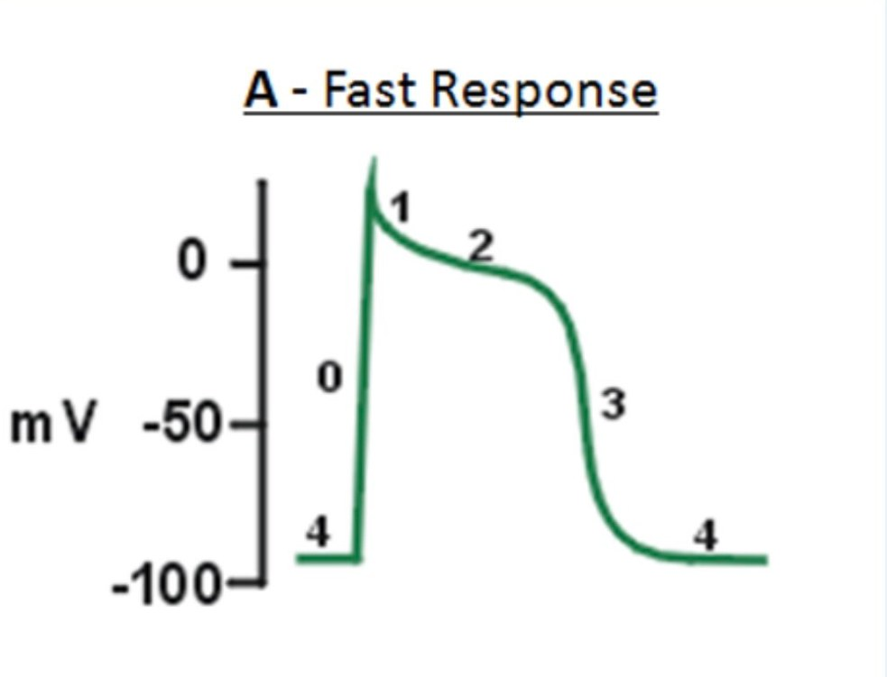
A – תגובה מהירה (מהבוחן): מנוחה −90, עלייה חדה (Na⁺), פלטו, רה-פולריזציה. שלב 0 = Na⁺.
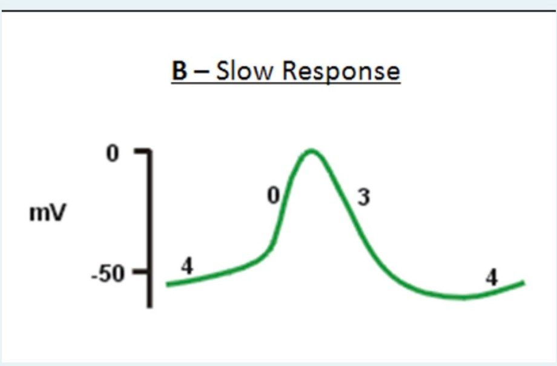
B – תגובה איטית (מהבוחן): מנוחה −60 לא יציבה, שלב 4 עולה לבד, עלייה מדורגת (Ca²⁺), אין פלטו. שלב 0 = Ca²⁺.
תא מהיר Fast response
תא איטי Slow response
איפה
שריר העליות, שריר החדרים, סיבי פורקיניה
SA node, AV node
פוטנציאל מנוחה
−90 mV, יציב (שלב 4 שטוח)
−60 mV, לא יציב (שלב 4 עולה = pacemaker potential)
שלב 0 – מי אחראי
Na⁺ דרך תעלות נתרן מהירות; עלייה חדה (dV/dt גבוה)
Ca²⁺ דרך L-type; עלייה הדרגתית
שלבים 1–2
יש: שלב 1 (K⁺ חולף), שלב 2 פלטו (Ca²⁺ נכנס = K⁺ יוצא)
אין פלטו, אין שלב 1
שלב 3
K⁺ יוצא
K⁺ יוצא
שלב 4
מנוחה, IK1 מחזיק
If (Na⁺ נכנס) + T-type Ca²⁺ → דה-פולריזציה ספונטנית
סף
≈ −70 mV
≈ −40 mV
מהירות הולכה
מהירה (0.3–4 מ'/שנ')
איטית (0.02–0.1 מ'/שנ')
אוטומטיות
אין (בפורקיניה חלשה)
יש
רגישות
לחוסמי Na⁺ (לידוקאין)
לחוסמי Ca²⁺ (וראפמיל), לאדנוזין, לואגוס
"מהיר = נתרן, איטי = סידן". דמיין: נתרן (Na) = Nascar – מהיר, עלייה חדה. סידן (Ca) = Caravan – איטי ומדורג. ומי שאין לו פוטנציאל מנוחה יציב (האיטי) – לא נח, ולכן הוא הקוצב.
שתי שאלות בבוחן 1 עם האיורים A ו-B: "מוליכות של איזה יון דומיננטית בשלב 0?" A (מהיר) → Na⁺. B (איטי) → Ca²⁺.
בשאלה על הקוצב, "Na⁺" כן מופיע – אבל בשלב 4 (If), לא בשלב 0. ובתא מהיר Ca²⁺ כן מופיע – אבל בשלב 2 (פלטו), לא בשלב 0. קראו איזה שלב שואלים.
שלבי פוטנציאל הפעולה Phases 0–4חובה
תא מהיר (חדר):
שלב
שם
מה קורה למתח
תעלה / יון דומיננטי
0
דה-פולריזציה מהירה
−90 → +20 בתוך 1–2 ms
פתיחת תעלות Na⁺ מהירות (INa) – נכנס
1
רה-פולריזציה חלקית ("השן")
ירידה קטנה מהשיא
תעלות Na⁺ נסגרות (inactivation) + K⁺ חולף יוצא (Ito)
2
פלטו
כמעט קבוע ~0 mV, 100–200 ms
Ca²⁺ נכנס (L-type, ICa,L) מאוזן ע"י K⁺ יוצא. הסידן הזה מפעיל את הכיווץ
3
רה-פולריזציה
חזרה ל-−90
תעלות Ca²⁺ נסגרות; K⁺ יוצא (delayed rectifier IK)
4
מנוחה
−90 יציב
K⁺ (IK1); Na⁺/K⁺-ATPase ו-NCX משחזרים גרדיאנטים
תא איטי (SA node): שלב 4 – דה-פולריזציה ספונטנית: If (Na⁺ נכנס דרך תעלות HCN) ואחריו T-type Ca²⁺; שלב 0 – L-type Ca²⁺ נכנס; שלב 3 – K⁺ יוצא. אין שלבים 1 ו-2.
"0 נתרן, 1 נשימה, 2 סידן, 3 אשלגן, 4 נחים" – או באנגלית "Na, Kick, Ca, K, Rest". ואז לקוצב: "Funny בארבע, Ca באפס" – ה-F של funny נראה כמו 4 הפוך.
שלב 2 הוא איזון: גם Ca²⁺ נכנס וגם K⁺ יוצא – לכן המתח קבוע. אם מסיח אומר "בשלב 2 אין תנועת יונים" – שגוי. אם מסיח אומר "בשלב 0 של תא קוצב נכנס Na⁺" – שגוי (זה Ca²⁺).
תקופה רפרקטורית Refractory Period, ERP / RRPחובה
ERP (Effective/Absolute): משלב 0 עד אמצע שלב 3 (~−50 mV). שום גירוי, חזק ככל שיהיה, לא יוצר AP מתפשט – תעלות ה-Na⁺ במצב inactivated ולא יכולות להיפתח שוב עד שהמתח יחזור לשלילי.
RRP (Relative): סוף שלב 3 – חלק מתעלות ה-Na⁺ התאוששו; גירוי חזק מהרגיל יוצר AP, אך קטן ואיטי יותר (ועלול להיות אריתמוגני). לאחריו "תקופה סופר-נורמלית" קצרה.
המשמעות הפיזיולוגית: ה-ERP ארוך כמעט כמו הכיווץ עצמו → אי אפשר לסכם כיווצים ואין טטנוס. הלב מחויב להתרפות ולהתמלא. גם מונע מהגירוי להסתובב לאחור (הולכה חד-כיוונית).
ERP של ה-AV node ארוך במיוחד – זה מה שמגביל את קצב החדרים בפרפור עליות.
תרופות שמאריכות שלב 3 (חוסמי K⁺ כמו סוטלול/אמיודרון) מאריכות ERP ו-QT.
ERP = "Even Rambo can't Pass" – אפילו גירוי ענק לא עובר. RRP = "Really strong Required to Pass". ולמה חשוב? "לב לא עושה טטנוס" – שריר שלד יכול להתכווץ ברצף, הלב חייב לשחרר כדי להתמלא.
ERP ≠ משך ה-AP. ה-ERP מסתיים לפני סוף ה-AP (באמצע שלב 3). ו"תקופה רפרקטורית ארוכה" היא תכונה חיובית בלב – לא פגם.
אוטומטיות Automaticity
היכולת של תא ליזום AP בעצמו, בלי גירוי חיצוני, בזכות דה-פולריזציה ספונטנית בשלב 4.
יש לה היררכיה: SA (~70, עצמי 100) > AV (~50) > His-Purkinje (~30). הקוצב הדומיננטי הוא המהיר; השאר "קוצבים סמויים" (latent pacemakers) שמתגלים רק כשהמהיר נכשל (escape rhythm).
תאי שריר העבודה אינם אוטומטיים בתנאים תקינים (שלב 4 יציב).
מה קובע את קצב הקוצב: (1) שיפוע שלב 4 – הגורם העיקרי; (2) פוטנציאל דיאסטולי מקסימלי (כמה שלילי מתחילים); (3) רמת הסף.
"מי שלא נח – מנצח": תא בלי פוטנציאל מנוחה יציב הוא זה שמתחיל. סימפתטי מגדיל את שיפוע 4 ("עלייה חדה יותר במדרון = מגיעים לסף מהר יותר"), ואגוס משטח אותו ומוריד את נקודת ההתחלה (היפר-פולריזציה).
הזרם ה"מצחיק" Funny Current, If
זרם Na⁺ נכנס (וקצת K⁺) דרך תעלות HCN שנפתחות דווקא בהיפר-פולריזציה (בסוף שלב 3) – לכן "מצחיק": תעלה רגילה נפתחת בדה-פולריזציה.
הוא מתחיל את שלב 4 בקוצב: מתח עולה בהדרגה מ-−60 לכיוון הסף (−40), שם T-type ואז L-type Ca²⁺ מסיימים את העבודה.
נשלט ישירות ע"י cAMP: סימפתטי (β1 → ↑cAMP) מגדיל If → שלב 4 תלול → HR ↑. ואגוס (M2 → ↓cAMP) מקטין → HR ↓.
תרופה: איבאברדין (ivabradine) חוסמת If → מורידה HR בלי להשפיע על כיווציות.
Funny = נפתח "הפוך" (בהיפר-פולריזציה) וגם First – הראשון בשלב 4. "Four-Funny": שלב 4, זרם Funny, HCN.
מחזיק פוטנציאל מנוחה; כמעט לא קיים בקוצב (לכן אין לו מנוחה יציבה)
K⁺ IK,ACh
יוצא
4 (קוצב)
נפתח ע"י ואגוס → היפר-פולריזציה → HR ↓
אטרופין (עקיף)
HCN (If)
Na⁺ נכנס
4 (קוצב)
מתחיל את הדה-פולריזציה הספונטנית
איבאברדין
"נכנס מדפלרז, יוצא מרפלרז": כל קטיון שנכנס (Na⁺, Ca²⁺) מעלה מתח; K⁺ שיוצא מוריד. יש רק יוצא אחד חשוב – אשלגן – ולכן כל "ירידה" במתח = אשלגן.
השפעה כרונוטרופית Chronotropic Effect
כרונוטרופי = השפעה על קצב הלב (chronos = זמן). חיובי = מזרז, שלילי = מאט.
סימפתטי (NE על β1): ↑cAMP → ↑If, ↑ICa → שיפוע שלב 4 תלול יותר → מגיעים לסף מהר → HR ↑. גם מקצר את ה-AP.
פרה-סימפתטי (ACh על M2): ↓cAMP → ↓If, ↓ICa; וגם פותח IK,ACh → היפר-פולריזציה (מתחילים מנקודה שלילית יותר) → שיפוע שטוח → HR ↓.
במנוחה הטונוס הואגלי שולט (70 במקום 100). עד ~100 HR עולה בעיקר ע"י הסרת ואגוס; מעל זה – הוספת סימפתטי.
החברים למשפחה: אינוטרופי = כיווציות, דרומוטרופי = מהירות הולכה ב-AV (PR), לוסיטרופי = קצב ההרפיה.
כרונו = שעון (כרונומטר), אינו = כוח (אינטנסיביות), דרומו = דרך (הולכה, הדרומדר רץ בדרך), לוסי = להרפות (loose). סימפתטי = + בכולם; ואגוס = − בכרונו ובדרומו, כמעט כלום על החדרים.
אק"ג ECG: P wave, PR interval, QRS, ST, T waveחובה
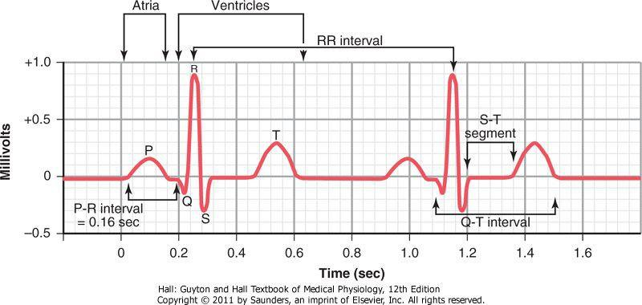
גלים ומרווחים. PR 0.12–0.20, QRS <0.12, QT ≤0.40 (מתוקן). משבצת קטנה 0.04 ש', גדולה 0.2 ש'.
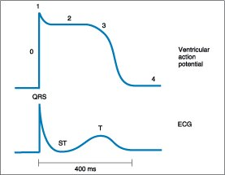
AP מול אק"ג: QRS = שלב 0 של החדרים, ST = שלב 2 (פלטו), T = שלב 3.
רכיב
מה הוא
תקין
אם לא תקין
גל P
דה-פולריזציה של העליות (מתחיל ב-SA)
<0.12 ש', חיובי ב-II, לפני כל QRS
אין P / P כאוטי = פרפור עליות; P ללא QRS = חסם AV
מרווח PR
מתחילת P לתחילת QRS = השהיית ה-AV node
0.12–0.20 ש' (3–5 משבצות קטנות)
>0.20 = חסם AV דרגה 1; קצר = מסלול עוקף (WPW)
QRS
דה-פולריזציה של החדרים (His–Purkinje → שריר). רה-פולריזציית העליות מוסתרת בתוכו
<0.12 ש' (צר)
רחב = מוצא חדרי (VT, פעימה חדרית) או חסם ענף
מקטע ST
החדרים כולם מדופלרזים = פלטו (שלב 2). איזואלקטרי
על קו הבסיס
עליה/צניחה = איסכמיה/אוטם
גל T
רה-פולריזציה של החדרים (שלב 3)
חיובי (כיוון QRS)
הפוך = איסכמיה; גבוה-צר = היפרקלמיה
מרווח QT
משך ה-AP החדרי כולו (דה + רה)
≤0.40–0.44 ש' מתוקן לקצב
ארוך = סיכון לאריתמיה (torsades)
קצב מהנייר: HR = 300 ÷ מספר המשבצות הגדולות בין שני R (או 1500 ÷ קטנות). 1 גדולה = 300, 2 = 150, 3 = 100, 4 = 75, 5 = 60.
P-Q-R-S-T = "פרוזדורים, קצת השהיה, רעש של חדרים, שקט (ST), תיקון (T)". PR = "פקק ב-AV" (0.12–0.20 = "בין 3 ל-5 משבצות"). QRS צר = "חדרים דרך הכבל המהיר"; QRS רחב = "חדרים בלי כבל" (המקור בחדר).
"גל P מייצג כיווץ העליות" – לא מדויק: P = דה-פולריזציה (האירוע החשמלי); הכיווץ בא מיד אחריו. QRS לא כולל רה-פולריזציה של העליות כי היא מוסתרת – לא "לא קיימת".
קצב סינוס, חסם AV, פרפור פרוזדורים Sinus Rhythm, AV Block, Atrial Fibrillation
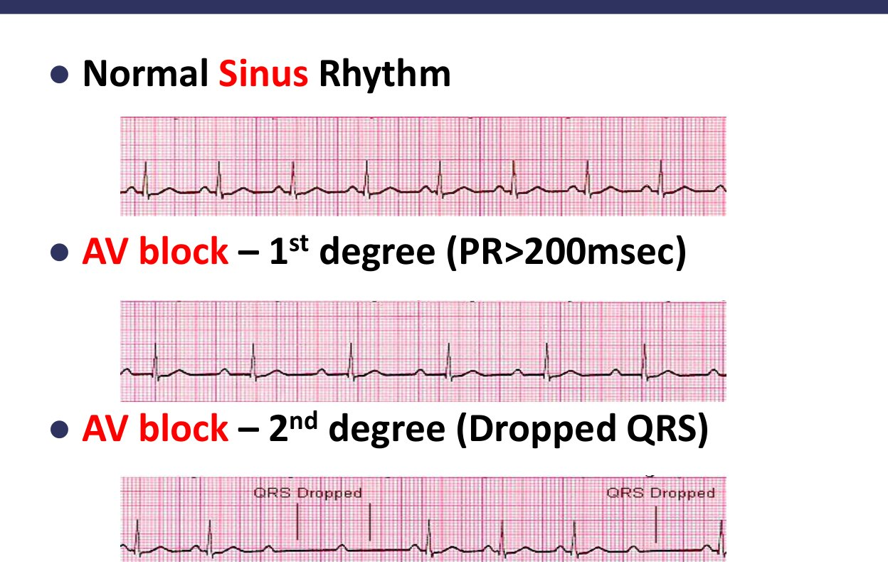
חסמי AV. דרגה 1: PR ארוך קבוע. דרגה 2: P שלא עובר. דרגה 3: P ו-QRS לא קשורים.
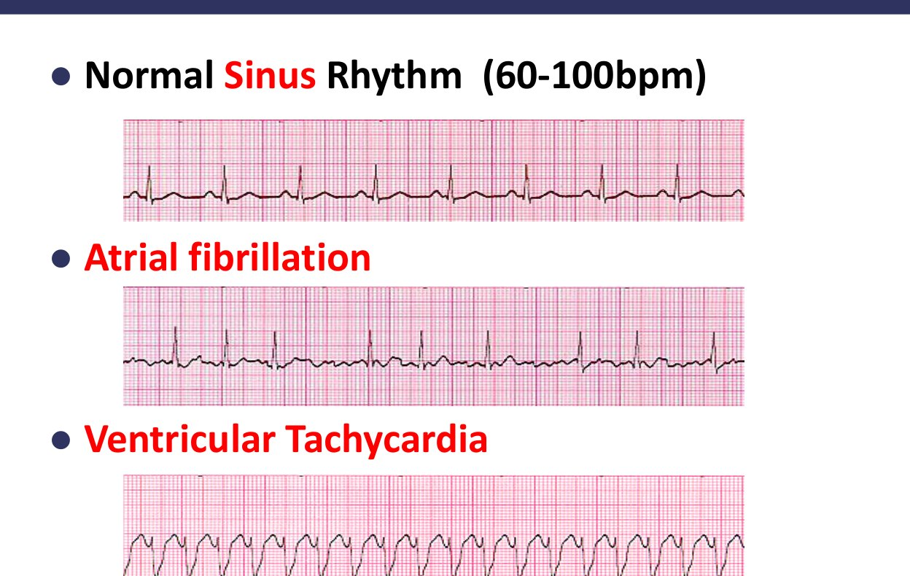
פרפור עליות: אין P, RR לא סדיר, QRS צר. VT: QRS רחב, מהיר, סדיר.
חלק מה-P לא עוברים. Mobitz I: PR מתארך בהדרגה עד P שנופל. Mobitz II: PR קבוע ולפתע P נופל
Mobitz I ב-AV node (שפיר יותר), Mobitz II מתחת לו (His) – מסוכן
חסם AV דרגה 3 (מלא)
P ו-QRS בלתי תלויים; P סדיר ב-70, QRS סדיר ואיטי (30–50), QRS רחב אם המוצא מהחדר
אין הולכה; קוצב סמוי מתעורר (escape). קוצב מלאכותי
פרפור עליות (AFib)
אין גלי P (קו בסיס רועד), RR לא סדיר באופן לא סדיר, QRS צר
מוקדים/מעגלים כאוטיים בעליות (400–600/דקה); AV node מסנן → חדרים 100–160. אין "atrial kick" → SV ↓ ~20%; אין S4; סיכון לקרישים (CVA)
טכיקרדיה חדרית (VT)
QRS רחב, מהיר (>120), בד"כ סדיר, אין P
מוקד/מעגל בחדר. מסוכן – עלול להפוך לפרפור חדרים (VF: כאוס, אין QRS → דפיברילציה)
שלוש שאלות על כל רצועה: (1) יש P? אין → פרפור/VT. (2) P עובר ל-QRS? PR ארוך → דרגה 1; חלק נופלים → דרגה 2; לא קשורים → דרגה 3. (3) QRS צר או רחב? צר = המקור מעל החדרים, רחב = בחדרים. פרפור = "לא סדיר באופן לא סדיר".
בפרפור עליות ה-QRS צר (ההולכה לחדרים דרך AV-His תקינה). QRS רחב = חדרי. ובחסם דרגה 3 ה-P סדירים – הבעיה היא שאינם קשורים ל-QRS.
רשימה 1 · התכונות המכאניות של הלב Mechanical properties
הרעיון במשפט: בכל פעימה החדר מתמלא (preload), מתכווץ בלי לשנות נפח עד שהוא מנצח את לחץ האאורטה (afterload), פולט כמות שתלויה בכיווציות, ונשאר עם שארית (ESV). את כל זה רואים בשתי תמונות: דיאגרמת וויגרס (לאורך זמן) ולולאת לחץ-נפח (בלי ציר זמן).
מחזור הלב Cardiac Cycleחובה
7 שלבים (ב-75/דקה המחזור ~0.8 ש': סיסטולה ~0.3, דיאסטולה ~0.5). הכלל: מסתם נפתח או נסגר רק בגלל הפרש לחצים – שום דבר לא "מפעיל" אותו.
#
שלב
מסתמים
מה קורה
אק"ג / קול
1
סיסטולת העלייהAtrial systole
AV פתוח, אאורטלי סגור
העלייה מתכווצת ומוסיפה ~20% אחרונים למילוי ("atrial kick"). סוף השלב = EDV
P → PR. S4 (אם פתולוגי)
2
כיווץ איזו-וולומטרי
כולם סגורים
החדר מתכווץ, הלחץ עולה בחדות, הנפח קבוע. מתחיל כשלחץ החדר > לחץ העלייה (המיטרלי נסגר) ונגמר כשלחץ החדר > לחץ האאורטה הדיאסטולי (~80)
QRS. S1 בתחילתו
3
פליטה מהירה
אאורטלי פתוח
רוב ה-SV יוצא; לחץ החדר והאאורטה מגיעים לשיא (~120); הנפח צונח
ST
4
פליטה מואטת
אאורטלי פתוח
הזרימה ממשיכה באינרציה למרות שלחץ החדר כבר מתחיל לרדת
T
5
הרפיה איזו-וולומטרית
כולם סגורים
האאורטלי נסגר כשלחץ החדר < אאורטה (dicrotic notch באאורטה). הלחץ צונח, הנפח קבוע = ESV
סוף T. S2 בתחילתו
6
מילוי מהיר
AV פתוח
המיטרלי נפתח כשלחץ החדר < עלייה. ~70% מהמילוי, פסיבי + "שאיבה" של החדר המתרפה
S3 (אם יש)
7
מילוי איטיDiastasis
AV פתוח
מילוי איטי מהוורידים דרך העלייה. זה השלב שמתקצר כש-HR עולה
קו ישר לפני P
"סגור-פתח-סגור-פתח" של שני המסתמים לסירוגין: מיטרלי נסגר (S1) → אאורטלי נפתח → אאורטלי נסגר (S2) → מיטרלי נפתח. בין "סגור" ל"פתח" הנפח קבוע = איזו-וולומטרי (פעמיים במחזור). סיסטולה = S1 עד S2.
"כל המסתמים פתוחים" – לעולם לא קורה. "כולם סגורים" – קורה פעמיים (כיווץ והרפיה איזו-וולומטריים). ובטכיקרדיה מה שמתקצר הוא הדיאסטולה (בעיקר diastasis), לא הסיסטולה.
דיאגרמת וויגרס Wiggers Diagram
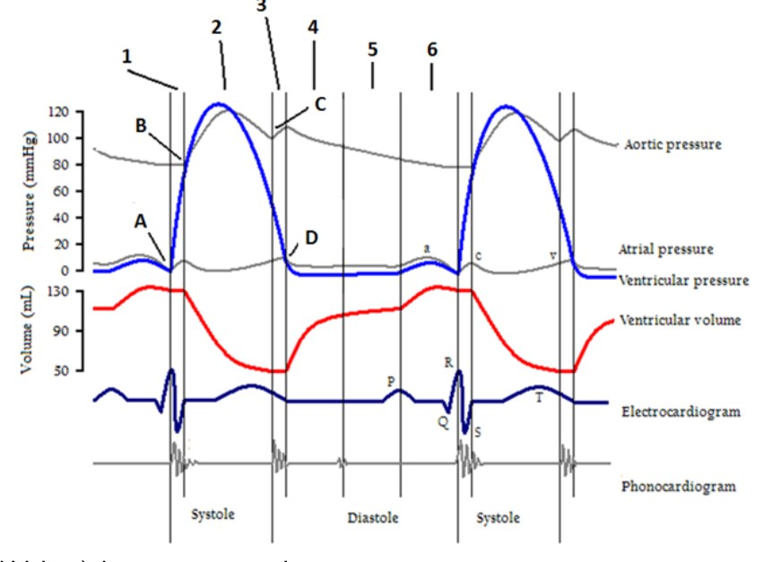
האיור מהבוחן. כחול = לחץ חדר שמאל, אפור עליון = אאורטה, אפור תחתון = עלייה, אדום = נפח. A סגירת מיטרלי · B פתיחת אאורטלי · C סגירת אאורטלי · D פתיחת מיטרלי. 1 כיווץ איזו-וולומטרי · 2 פליטה · 3 הרפיה איזו-וולומטרית · 4 מילוי מהיר · 5 מילוי איטי · 6 סיסטולת עלייה.
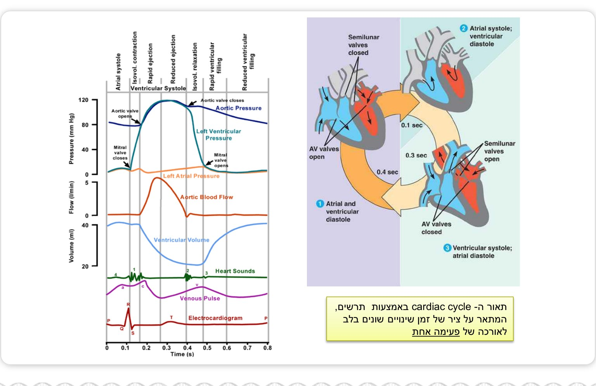
הגרסה מההרצאה עם שמות השלבים, קולות הלב ואק"ג מסונכרנים.
כל העקומות על ציר זמן אחד: לחץ אאורטה, לחץ חדר שמאל, לחץ עלייה, נפח חדר, אק"ג, קולות.
איך מוצאים את המסתמים: היכן שעקומת לחץ החדר חוצה את עקומת לחץ העלייה = מיטרלי (חוצה למעלה → נסגר; חוצה למטה → נפתח). היכן שעקומת החדר חוצה את האאורטה = אאורטלי (למעלה → נפתח; למטה → נסגר).
איך מוצאים את השלבים: נפח קבוע + לחץ משתנה חדות = איזו-וולומטרי. נפח יורד = פליטה. נפח עולה = מילוי.
סדר הזמן: גל P → סיסטולת עלייה; QRS → תחילת סיסטולה (S1 מיד אחריו); סוף T → S2.
"החדר חוצה – המסתם משנה מצב". כחול עולה מעל אפור תחתון = מיטרלי נסגר; כחול עולה מעל אפור עליון = אאורטלי נפתח; כחול יורד מתחת לעליון = אאורטלי נסגר; כחול יורד מתחת לתחתון = מיטרלי נפתח. A-B-C-D הולכים עם הזמן: A אחרי QRS, D בסוף.
שלוש שאלות על האיור: פתיחת מיטרלי = D, פתיחת אאורטלי = B, פליטה = 2.
עומס מוקדם Preloadחובה
המתיחה של סיבי השריר לפני הכיווץ = אורך הסיב בסוף הדיאסטולה. בפרקטיקה: EDV (או לחץ סוף-דיאסטולי / לחץ העלייה / CVP).
מה מגדיל preload: ↑החזר ורידי (עירוי נוזלים, שכיבה, כיווץ ורידים ע"י סימפתטי, משאבת שרירים, שאיפה), ↑נפח דם, HR איטי (יותר זמן מילוי), כיווץ עלייה יעיל, חדר נענה (compliant).
מה מקטין: דימום/התייבשות, עמידה, הרחבת ורידים (ניטרטים), טכיקרדיה קיצונית, פרפור עליות (אין atrial kick), חדר קשיח, לחץ תוך-בית-חזה חיובי (Valsalva).
אפקט: ↑preload → ↑SV (פרנק-סטרלינג); ESV בקירוב לא משתנה → EF כמעט לא משתנה. ב-PV loop: הלולאה מתרחבת ימינה.
Preload = "כמה מילאת את הבלון לפני שהנחת לו לעוף". יותר מילוי → מתיחה גדולה → פליטה חזקה. בבוחן: "preload" = EDV, נקודה C בלולאה (סוף המילוי, סגירת המיטרלי).
עומס בתר Afterloadחובה
ההתנגדות שהחדר צריך להתגבר עליה כדי לפלוט = הלחץ שהחדר חייב לפתח. בפרקטיקה: לחץ האאורטה (הדיאסטולי קובע מתי האאורטלי נפתח; הסיסטולי/MAP את העומס במהלך הפליטה). מדויק יותר: מתח הדופן בסיסטולה (לפלס: σ = P·r / 2h).
מה מגדיל: ↑לחץ דם / ↑TPR (כיווץ עורקיקים, יתר לחץ דם), היצרות מסתם אאורטלי, אאורטה קשיחה (גיל). (לחדר ימין: יתר לחץ דם ריאתי.)
מה מקטין: הרחבת עורקיקים (מרחיבי כלי דם, ACE-i), ירידת לחץ דם, היפרטרופיה (דופן עבה מקטינה את מתח הדופן).
אפקט: ↑afterload → האאורטלי נפתח מאוחר (לחץ גבוה יותר), הפליטה קצרה → SV ↓, ESV ↑, EF ↓. EDV בתחילה לא משתנה (ובפעימות הבאות עולה בגלל השארית). ב-PV loop: לולאה גבוהה וצרה.
Afterload = "הדלת שצריך לדחוף": לחץ האאורטה הוא דלת כבדה; כבדה יותר (יתר לחץ דם, היצרות אאורטלית) → נפתחת מאוחר ופחות דם יוצא. בלולאה: הדלת = נקודה D (פתיחת אאורטלי) – גבוהה יותר = afterload גבוה.
↑afterload לא מגדיל SV. המסיח "העלאת לחץ הדם מגדילה את נפח הפעימה" שגוי. ו-afterload הוא לחץ/התנגדות, לא נפח.
כיווציות Contractility / Inotropyחובה
כוח הכיווץ בלי קשר ל-preload ול-afterload = תכונה פנימית של השריר. מולקולרית: כמות הסידן שמגיע לטרופונין ורגישות המיופילמנטים אליו.
איך מודדים: EF (הכי נפוץ קלינית), dP/dtmax (קצב עליית הלחץ בכיווץ האיזו-וולומטרי), שיפוע ESPVR (Ees) ב-PV loop – המדד הטהור ביותר.
כיווציות = "כמה סידן יש במסיבה". כל מה שמעלה סידן תוך-תאי (סימפתטי, דיגוקסין, קצב מהיר) = אינוטרופי חיובי; כל מה שחוסם סידן (חמצת – H⁺ מתחרה על טרופונין; חוסמי Ca; היפוקסיה – אין ATP) = שלילי. EF הוא מדד הכיווציות: EF עולה רק עם כיווציות (לא עם preload).
"↑EDV מעלה כיווציות" – לא. פרנק-סטרלינג מגדיל SV דרך אורך, לא דרך כיווציות. שינוי כיווציות = שינוי ב-SV באותו preload.
נפח פעימה Stroke Volume, SVחובה
כמות הדם שהחדר פולט בפעימה אחת. SV = EDV − ESV ≈ 120 − 50 = ~70 מ"ל.
מדד קליני לכיווציות (לא מושלם, מושפע גם מ-afterload). EF <40% = אי-ספיקת לב סיסטולית (HFrEF).
↑contractility → EF ↑; ↑afterload → EF ↓; ↑preload לבד → EF כמעט לא משתנה (SV ו-EDV עולים יחד).
חישוב מהיר: EDV 150, ESV 90 → SV 60 → EF 40%.
EF = "איזה אחוז מהכוס שפכת". 120 בכוס, שפכת 70 → 60%. מי שמחזק את היד (כיווציות) שופך יותר; מי שממלא את הכוס יותר שופך יותר אבל באותו אחוז.
תפוקת הלב Cardiac Output, CO = SV × HRחובה
CO = SV × HR ≈ 70 מ"ל × 70 = ~5 ליטר/דקה במנוחה; במאמץ 20–25 (עד 35 בספורטאים). Cardiac index = CO/שטח גוף ≈ 3 ל'/דקה/מ².
CO של לב ימין = CO של לב שמאל (מחזורים בטור).
CO = החזר ורידי במצב יציב (מה שחוזר = מה שיוצא).
MAP ≈ CO × TPR → CO = MAP / TPR. מדידה: שיטת פיק (CO = VO₂ / (CaO₂ − CvO₂)), דילול תרמי, אקו.
העלאת HR מעלה CO עד ~150–180/דקה; מעבר לזה הדיאסטולה קצרה מדי, EDV ו-SV צונחים, CO יורד.
חלוקת CO במנוחה: כליות ~20–25%, מעיים ~25%, מוח ~15%, שרירים ~20%, לב (כלילי) ~5%.
"5 ליטר – כל הדם בדקה": נפח הדם ~5 ליטר ו-CO ~5 ל'/דקה – הדם מקיף את הגוף פעם בדקה. במאמץ פי 4–5. CO = SV × HR – כל שאלה "מה יקרה ל-CO" מפרקים לשני המכפילים.
בבוחן הבוקר: שתי שאלות "מה נכון / מה לא נכון" על מרכיבי CO = SV × HR יחד עם פרנק-סטרלינג ו-PV loop. המסיחים הנפוצים: afterload מעלה SV (שגוי), EDV מעלה כיווציות (שגוי), ESV תלוי בכיווציות (נכון).
חוק פרנק-סטרלינג Frank-Starling Lawחובה
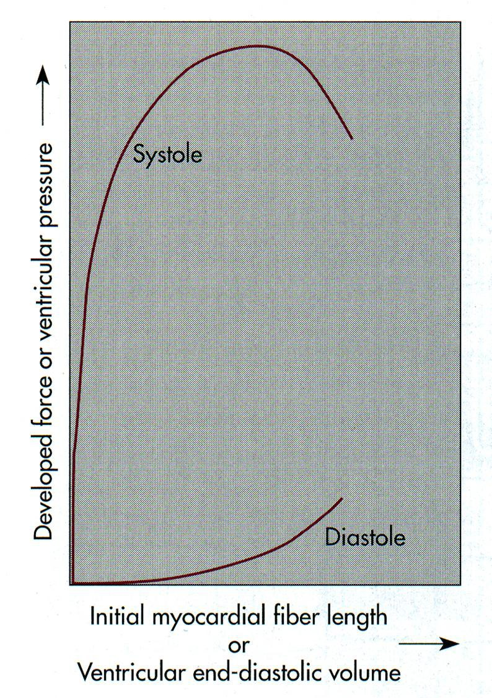
משפחת עקומות. ציר X: EDV / preload; ציר Y: SV / CO. סימפתטי מזיז למעלה-שמאלה, אי-ספיקה למטה-ימינה.
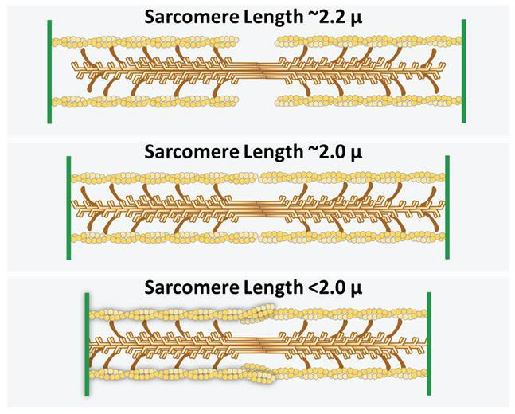
הבסיס: יחס אורך-מתח של הסרקומר. אופטימום ~2.2 µm; הלב במנוחה עובד על החלק העולה.
הניסוח: ככל שהחדר מתמלא יותר בדיאסטולה (↑EDV, ↑אורך סיב), הוא מתכווץ חזק יותר ופולט יותר (↑SV) – "הלב פולט את מה שהוא מקבל".
מנגנון: (1) יחס אורך-מתח – חפיפה אופטימלית יותר של אקטין-מיוזין (הלב במנוחה נמצא על החלק העולה של העקומה, מתחת ל-2.2 µm); (2) ↑רגישות הטרופונין לסידן במתיחה (length-dependent activation) – המנגנון הדומיננטי.
תפקידים: איזון בין לב ימין ושמאל פעימה-אחר-פעימה; תגובה מיידית לשינוי בהחזר הורידי (שכיבה, עירוי, שאיפה); מניעת הצטברות דם בריאות.
זהו מנגנון intrinsic / heterometric (תלוי אורך) – לא דורש עצבים או הורמונים. לב מושתל (מנותק מעצבים) עובד בעיקר דרכו.
הזזת העקומה: ↑כיווציות (סימפתטי, דיגוקסין) → למעלה; ↓כיווציות (אי-ספיקה, חוסמי β) → למטה ושטוחה. תנועה לאורך העקומה = שינוי preload; תנועה בין עקומות = שינוי כיווציות.
בלב בריא אין "חלק יורד" רלוונטי – הפריקרד מגביל מתיחת-יתר.
"גומייה מתוחה חוזרת חזק יותר" – אבל הסיבה האמיתית בלב: מתיחה מגבירה את רגישות הטרופונין לסידן. "לאורך העקומה = preload; בין עקומות = כיווציות". סימפתטי = "קומה למעלה".
פרנק-סטרלינג לא משנה כיווציות. "העלאת EDV מעלה את הכיווציות" – שגוי; "העלאת EDV מעלה את SV" – נכון. ESV ב-↑preload כמעט לא משתנה.
לולאת לחץ-נפח Pressure-Volume Loopחובה
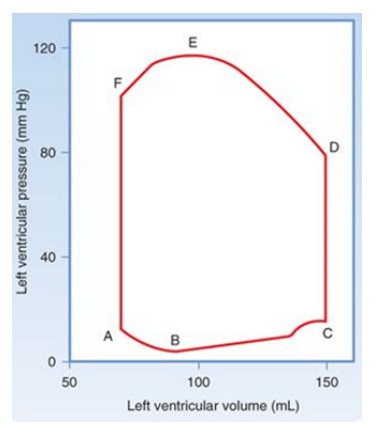
האיור מהבוחן.A פתיחת מיטרלי (ESV) → A–C מילוי → C סגירת מיטרלי (EDV = preload) → C–D כיווץ איזו-וולומטרי → D פתיחת אאורטלי → D–F פליטה (E שיא לחץ = afterload) → F סגירת אאורטלי (ESV) → F–A הרפיה איזו-וולומטרית. SV = D–F (או C–A).
ציר X = נפח החדר, ציר Y = לחץ החדר, בלי ציר זמן. הלולאה הולכת נגד כיוון השעון. 4 פינות = 4 אירועי מסתמים; 4 צלעות = 4 שלבים.
הפינה הימנית-תחתונה = סגירת מיטרלי = EDV = preload. הפינה השמאלית-עליונה אחרי הפליטה = סגירת אאורטלי = ESV. הקו העולה הימני = כיווץ איזו-וולומטרי; הקו היורד השמאלי = הרפיה איזו-וולומטרית.
פתיחת האאורטלי = הנקודה שבה הקו העולה מתחיל להתעקל שמאלה (לחץ ≈ דיאסטולי של האאורטה ~80). הלחץ המקסימלי בחלק העליון ≈ afterload.
SV = רוחב הלולאה; שטח הלולאה = עבודת הפעימה (stroke work).
ESPVR (End-Systolic PV Relationship): הקו שעליו כל נקודות סוף-הסיסטולה נופלות. שיפועו (Ees) = כיווציות. תלול יותר = כיווציות גבוהה יותר. EDPVR: עקומת המילוי הפסיבי = היענות החדר; קשיחות (היפרטרופיה) מרימה אותה.
שינוי
EDV
ESV
SV
EF
צורת הלולאה
↑Preload
↑
≈
↑
≈
מתרחבת ימינה לאורך EDPVR; ESPVR לא משתנה
↑Afterload
≈ (↑ בהמשך)
↑
↓
↓
גבוהה וצרה; האאורטלי נפתח גבוה יותר; הנקודה הסופית גולשת למעלה לאורך ESPVR
שלוש שאלות על האיור: פתיחת האאורטלי = D; SV בין D–F (ומקביל: C–A); הגדלת EDV משפיעה על נקודה C (זזה ימינה).
הקו העולה הימני הוא כיווץ איזו-וולומטרי (אחרי EDV), הקו היורד השמאלי הוא הרפיה. מתבלבלים כי "עולה" מזכיר מילוי – אבל במילוי הלחץ כמעט לא עולה, רק הנפח.
ההבדל משריר שלד: בלב חובה סידן חוץ-תאי (בלי Ca²⁺ במדיום – אין כיווץ); בשריר שלד הצימוד מכני ישיר (DHPR–RyR1), לא צריך סידן מבחוץ. בלב הכיווץ מדורג (כמות הסידן = כוח), בשריר שלד הוא "הכול או לא כלום" לסיב.
סימפתטי (β1): PKA מזרחן L-type (↑Ca נכנס = ↑כיווציות), פוספולמבן (↑SERCA = הרפיה מהירה, לוסיטרופיה), טרופונין I (שחרור מהיר).
דיגוקסין: חוסם Na⁺/K⁺-ATPase → ↑Na⁺ תוך-תאי → NCX מוציא פחות Ca²⁺ → יותר סידן ב-SR → ↑כיווציות. גם מגביר ואגוס → ↓HR.
"סידן קורא לסידן" (CICR): טיפה מבחוץ פותחת את הברז מבפנים. בלב "אין סידן בחוץ – אין כיווץ". SERCA = Sucks calcium back; NCX = Nudges Ca out for Na. דיגוקסין: "חסום את משאבת הנתרן ← הנתרן נתקע ← הסידן נתקע ← הלב חזק".
רשימה 1 · תכונות כלי הדם וחילוף חומרים בנימים Vessels & capillary exchange
הרעיון במשפט: הלב מייצר לחץ, העורקיקים קובעים התנגדות, הזרימה היא היחס ביניהם (Q = ΔP/R), הנימים הם המקום שבו הדם עושה את עבודתו (דיפוזיה וסינון), והלימפה אוספת את העודף. בצקת = העודף גדול מהלימפה.
"בנימים הזרימה (Q) הנמוכה ביותר" – שגוי: הזרימה הכוללת זהה בכל חתך של המערכת (CO). המהירות היא הנמוכה. ו"רוב הדם בעורקים" – שגוי; רוב הדם בוורידים.
התנגדות כלי הדם Vascular Resistance, TPRחובה
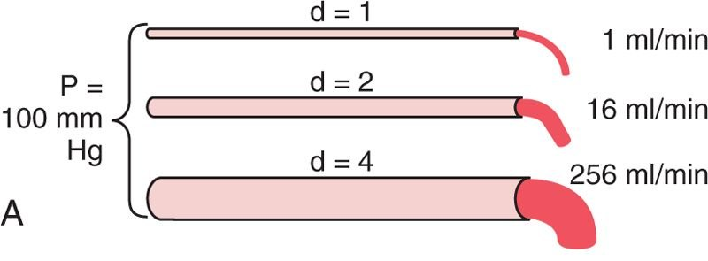
r⁴: רדיוס ×2 → זרימה ×16. רדיוס ×4 → ×256.
פואזיי:R = 8ηL / (πr⁴). התנגדות עולה עם צמיגות (η) ואורך (L), ויורדת עם הרדיוס בחזקת 4. הרדיוס הוא המשתנה היחיד שהגוף משנה בזמן אמת.
TPR (= SVR) = ההתנגדות הכוללת של המחזור הסיסטמי = (MAP − RAP) / CO ≈ (93 − 0)/5 ≈ 18–20 mmHg·min/L. נקבעת בעיקר ע"י העורקיקים.
בטור: Rtotal = R₁ + R₂ + … (אאורטה → עורק → עורקיק → נימה). במקביל: 1/Rtotal = 1/R₁ + 1/R₂ + … → ההתנגדות הכוללת קטנה מכל אחת מהן. האיברים מקבילים; הנימים מקבילים (לכן התנגדות הנימים הכוללת נמוכה למרות הרדיוס הזעיר).
מה מכווץ עורקיקים (↑TPR): סימפתטי (α1), אנגיוטנסין II, ADH, אנדותלין, קור, ↓pO₂ מקומי בריאות. מה מרחיב: NO, אדנוזין, CO₂/H⁺/K⁺ מקומיים, היסטמין, β2 (שרירים), חום, פרוסטגלנדינים, ANP.
בקרת זרימה מקומית: מטבולית (היפרמיה אקטיבית/ריאקטיבית), מיוגנית (מתיחה → כיווץ, אוטורגולציה), אנדותליאלית (NO, שאלת בוחן: NO → הרפיית שריר חלק → הרחבה → ↓TPR).
"רדיוס פי 2 = זרימה פי 16" – 2⁴ = 16. "במקביל ההתנגדות נופלת, בטור היא נערמת". TPR = "כמה סגורים כל הברזים (העורקיקים) יחד". חוק אוהם ללב: MAP = CO × TPR כמו V = I × R.
זרימה = הפרש לחצים / התנגדות Flow = ΔP / Rחובה
Q = ΔP / R. הזרימה מונעת ע"י הפרש לחצים (לא לחץ מוחלט) ומוגבלת ע"י התנגדות. למחזור כולו: CO = (MAP − RAP) / TPR → MAP ≈ CO × TPR.
משולב עם פואזיי: Q = ΔP · πr⁴ / (8ηL) – הזרימה לאיבר נקבעת בעיקר ע"י רדיוס העורקיקים שלו בלחץ נתון.
משוואת ההמשכיות:Q = v × A – הזרימה קבועה לאורך המערכת, המהירות הפוכה לשטח החתך (לכן איטי בנימים, מהיר באאורטה ~20 ס"מ/שנ').
למינרית מול טורבולנטית: מספר ריינולדס Re = ρvd/η; מעל ~2000–3000 טורבולנציה → אוושות, קולות קורוטקוף. טורבולנציה מופיעה ב: מהירות גבוהה (היצרות, אנמיה – צמיגות נמוכה), קוטר גדול, הסתעפויות.
ההפרש בין לחץ עורקי (~93) ללחץ ורידי (~0) הוא הכוח המניע של כל המחזור; לחץ הדם נשמר ע"י התנגדות העורקיקים ("ברז חצי-סגור").
Q = ΔP/R – "זרימה = דחיפה חלקי חסימה". אם שואלים "מה יקרה לזרימה לאיבר כשהעורקיק מתכווץ" – יורדת (R ↑); "כשהלחץ העורקי עולה באותה התנגדות" – עולה. Q = vA: "אותה כמות מים, צינור רחב = זרימה איטית".
היענות Compliance
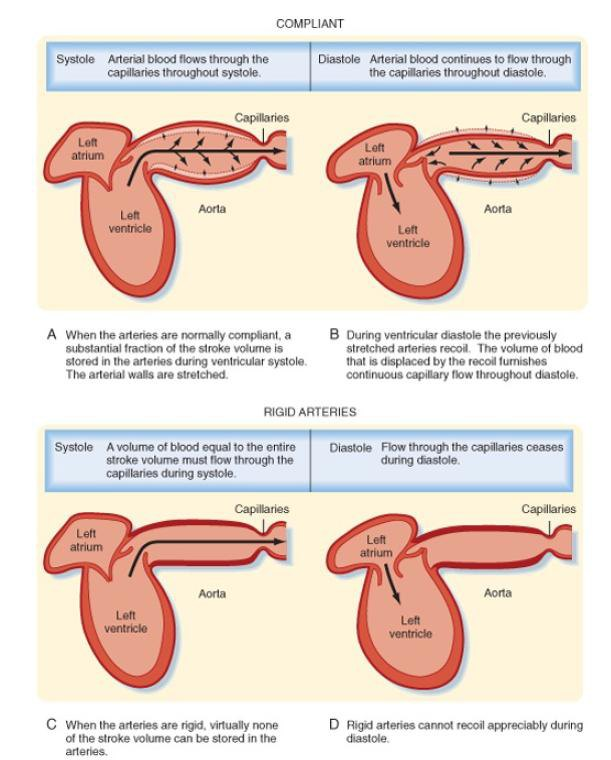
היענות: ורידים – הרבה נפח בשינוי לחץ קטן; עורקים – מעט.
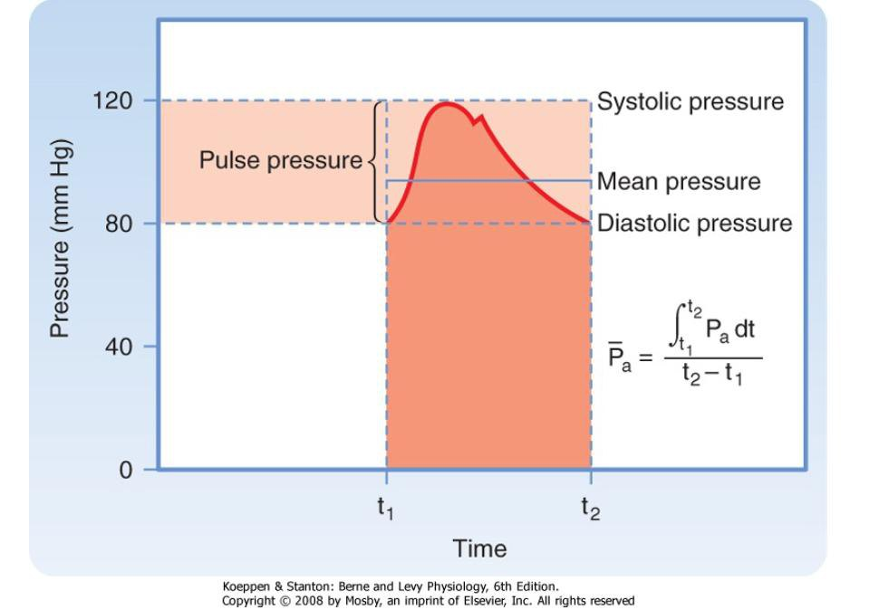
לחץ דופק ∝ SV / היענות. עורק קשיח → PP רחב.
C = ΔV / ΔP – כמה נפח נכנס לכלי לכל עליית לחץ. ורידים ×24 מעורקים (×8 נפח גדול יותר × 3 היענות ליחידת נפח).
ורידים: היענות גבוהה → מאגר דם; שינוי קטן בטונוס הוורידי מזיז נפח גדול ללב (↑preload). עורקים: היענות נמוכה → מאגר לחץ; שומרים לחץ בדיאסטולה.
היענות החדר (EDPVR): חדר קשיח = EDV נמוך באותו לחץ מילוי = אי-ספיקה דיאסטולית.
היענות = "כמה הבלון נותן". וריד = בלון רך (הרבה נפח, מעט לחץ); עורק = צמיג (קצת נפח, הרבה לחץ). PP = SV / C: "אותו SV לתוך צינור קשיח = קפיצת לחץ גדולה" – לכן לסבא PP רחב.
משוואת ברנולי Bernoulli Equation
האנרגיה הכוללת של הנוזל נשמרת: P + ½ρv² + ρgh = const → לחץ (אנרגיה פוטנציאלית) + אנרגיה קינטית + גובה.
המשמעות: במקום שהמהירות עולה (היצרות; Q = vA), הלחץ הצידי יורד. לכן בהיצרות מסתם/עורק הלחץ הנמדד אחרי ההיצרות נמוך, ואנרגיית הלחץ הופכת לקינטית (ואובדת לטורבולנציה וחום).
הדרגה (gradient) דרך היצרות: ΔP ≈ 4v² (ברנולי מפושט, באקו-דופלר) – מודדים מהירות ומחשבים הפרש לחצים על היצרות אאורטלית.
גובה (ρgh): בעמידה הלחץ ברגליים גבוה ב-~90 mmHg מהלב ובראש נמוך ב-~30. לכן בעמידה דם מצטבר בוורידי הרגליים (↓החזר ורידי → ברו-רפלקס).
בלחץ הדם הרגיל רוב האנרגיה היא לחץ; הרכיב הקינטי זניח חוץ מאשר באאורטה ובהיצרויות.
"מהר = נמוך": איפה שהדם מהיר (צר), הלחץ נמוך. כמו שני דפים שמתקרבים כשנושפים ביניהם. ΔP = 4v² – "ארבע וי בריבוע" לאקו.
המטוקריט וצמיגות הדם Hematocrit & Blood Viscosity
המטוקריט = אחוז הנפח של כדוריות אדומות: ~40% נשים, ~45% גברים. הצמיגות (η) של הדם ≈ 3 (פלסמה ≈ 1.5) ביחס למים.
הצמיגות עולה בצורה מעריכית עם ההמטוקריט: מעל ~50–60% (פוליציטמיה) ההתנגדות קופצת, הזרימה יורדת, הלב עובד קשה, סיכון לקרישים.
אנמיה (Hct נמוך): צמיגות ↓ → התנגדות ↓, זרימה ומהירות ↑ → טורבולנציה ואוושה זרימתית; CO ↑ (פיצוי).
צמיגות גם עולה ב: ריכוז חלבונים גבוה (מיאלומה), קור, זרימה איטית (אגרגציה של RBC). בכלים הקטנים הצמיגות האפקטיבית יורדת (Fåhræus–Lindqvist – הכדוריות זורמות במרכז).
בפואזיי: η במונה של R → ↑צמיגות = ↑התנגדות = ↓זרימה בלחץ נתון.
"יותר כדוריות – דם סמיך – צינור חסום יותר". פוליציטמיה = "דבש בצינורות" (R ↑); אנמיה = "מים בצינורות" (R ↓, מהיר, אוושה). הצמיגות עולה לא ליניארית – מ-45 ל-60% זה לא "קצת".
התנגדות Resistance
הגדרה: R = ΔP / Q – כמה הפרש לחץ דרוש ליחידת זרימה. יחידות: mmHg·min/L (PRU).
המשתנה היחיד שהגוף מווסת בשניות: רדיוס העורקיקים (וטונוס ורידי לנפח). צמיגות ואורך כמעט קבועים.
התנגדות ריאתית (PVR) ≈ 1/7 מ-TPR: אותו CO, לחץ 25/8 בלבד.
האיבר עם ההתנגדות הנמוכה ביותר מקבל את הזרימה הגדולה ביותר (כליות: 20% מ-CO ב-0.5% ממשקל הגוף).
התנגדות = "כמה צריך לדחוף כדי להעביר ליטר". במחזור הסיסטמי ~20 PRU (93 mmHg / 5 L), בריאות ~3.
חילוף חומרים בנימים Capillary Exchange
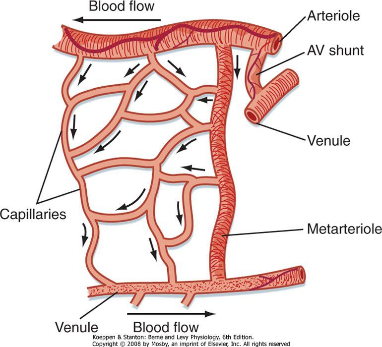
מערך נימים: metarterioles, סוגרים פרה-קפילריים, ~25% מהנימים פתוחים במנוחה.
שלושה מסלולים: (1) דיפוזיה – המנגנון העיקרי לחילוף חומרים (גזים, גלוקוז, חומצות אמינו); (2) סינון/ספיגה (bulk flow) – תנועת נוזל לפי כוחות סטרלינג, אחראי על מאזן נוזלים, לא על הזנה; (3) טרנסציטוזה (וסיקולות) לחלבונים גדולים.
מסיסי שומן (O₂, CO₂, הורמונים סטרואידיים): ישר דרך ממברנת האנדותל – שטח ענק, מהר. מסיסי מים (Na⁺, גלוקוז, מים): דרך מרווחים בין-תאיים (clefts, ~7 nm) ופורים – איטי יותר, תלוי גודל. חלבוני פלסמה (אלבומין): כמעט לא עוברים → יוצרים את הלחץ האונקוטי.
סוגי נימים: רציפים (שריר, מוח – BBB, הדוקים ביותר), מחולונים (fenestrated: כליה, מעי, בלוטות – חדירות גבוהה לנוזל), לא רציפים/סינוסואידים (כבד, מח עצם, טחול – עוברים גם חלבונים ותאים).
מתי הדיפוזיה יעילה: מרחק קצר (הנימים צפופים, כל תא ≤ 50 µm מנימה), שטח ענק (~500–700 מ"ר), זרימה איטית. במאמץ נפתחים יותר נימים (↑שטח, ↓מרחק) = recruitment.
"דיפוזיה מזינה, סינון משקה": החומרים עוברים בדיפוזיה; הנוזל עובר בסינון. שומני = דרך הקיר (מהר); מימי = דרך הסדקים (לפי גודל); חלבון = נשאר בפנים (ומושך מים).
דיפוזיה Diffusion
תנועה פסיבית לפי גרדיאנט ריכוזים, ללא אנרגיה. מהירה למרחקים קצרים (µm) ואיטית מאוד למרחקים ארוכים (זמן ∝ מרחק²) – לכן צריך נימים בכל מקום ולכן בצקת פוגעת בחמצון.
תלויה ב: גרדיאנט (ΔC), שטח (A), מרחק/עובי (Δx), מקדם הדיפוזיה (D – גודל המולקולה, מסיסות, טמפרטורה).
ההחלפה הנטו של מים בדיפוזיה דרך הנימה גדולה פי ~80 מהזרימה בפלסמה – אבל שווה לשני הכיוונים, לכן לא משנה נפח. מה שמשנה נפח הוא הסינון.
"דיפוזיה אוהבת קרוב, רחב ומדרון תלול". זמן דיפוזיה ∝ מרחק²: להכפיל מרחק = פי 4 זמן – לכן בצקת (מרחק) = היפוקסיה של הרקמה.
חוק פיק Fick's Law
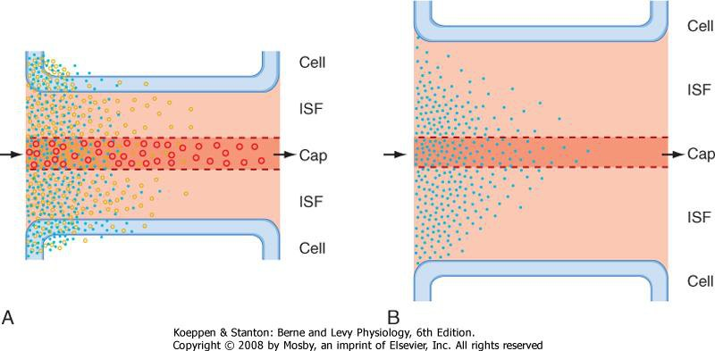
מוגבל-זרימה (מתאזן מהר לאורך הנימה) מול מוגבל-דיפוזיה (לא מגיע לשיווי משקל).
J = D · A · ΔC / Δx (או עם מקדם חדירות: J = P · A · ΔC). קצב הדיפוזיה עולה עם מקדם הדיפוזיה, השטח והגרדיאנט, ויורד עם המרחק/עובי.
מוגבל-זרימה (flow-limited): חומרים שעוברים בקלות (O₂, CO₂, מסיסי שומן, מולקולות קטנות): הם מתאזנים לפני סוף הנימה → כמות החומר שמועברת תלויה רק בכמה דם מגיע. להגדיל העברה = להגדיל זרימה (הרחבת עורקיק, recruitment).
מוגבל-דיפוזיה (diffusion-limited): חומרים גדולים/מסיסי מים או כשהמחסום עבה (בצקת, פיברוזיס, ריאה חולה): לא מגיעים לשיווי משקל לאורך הנימה → העברה תלויה בתכונות המחסום, ולא תעזור יותר זרימה.
חוק פיק ל-CO (אותו שם, רעיון אחר): CO = VO₂ / (CaO₂ − CvO₂) – צריכת החמצן חלקי הפרש התוכן העורקי-ורידי. 250 מ"ל/דקה ÷ (200 − 150 מ"ל/ל') = 5 ל'/דקה.
"פיק: דחוף (ΔC), רחב (A), קרוב (1/Δx)". מוגבל-זרימה = "הכול כבר עבר – תן יותר דם"; מוגבל-דיפוזיה = "הקיר עבה – יותר דם לא יעזור". O₂ בבריא = זרימה; O₂ בבצקת ריאות = דיפוזיה.
סינון וספיגה Filtration / Absorption
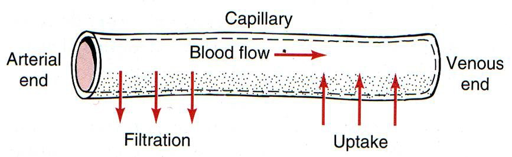
לאורך הנימה: Pc יורד מ-35 ל-15; πc קבוע ~25 → סינון בהתחלה, ספיגה בסוף.
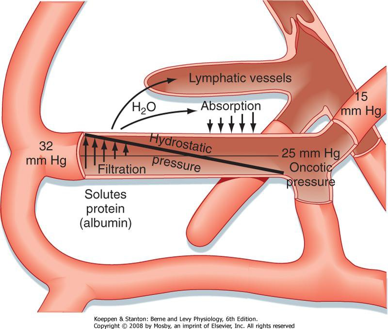
90% נספג בחזרה, 10% ללימפה (~2–3 ליטר ליום).
סינון = נוזל יוצא מהנימה לרקמה (כשהכוחות החוצה > פנימה). ספיגה = נוזל חוזר לנימה.
הקצה העורקי (Pc ≈ 35 > πc ≈ 25) → סינון. הקצה הורידי (Pc ≈ 15 < πc ≈ 25) → ספיגה. הלחץ האונקוטי כמעט לא משתנה לאורך הנימה; ההידרוסטטי יורד – הוא שקובע את הכיוון.
מאזן: בכל הגוף ~20 ל'/יום מסתנן, ~90% (18 ל') נספג חזרה, ~10% (2–3 ל') חוזר דרך הלימפה (יחד עם החלבונים שדלפו). במצב יציב: סינון = ספיגה + לימפה.
מה מגביר סינון: ↑Pc (הרחבת עורקיק, כיווץ ורידון, ↑לחץ ורידי, עמידה), ↓πc, ↑חדירות (Kf), ↑πi. מה מגביר ספיגה: כיווץ עורקיק (↓Pc – למשל בדימום: "autotransfusion"), ↑πc (עירוי אלבומין).
בנימים מסוימים הכיוון קבוע: גלומרולוס – רק סינון (Pc גבוה ~60); נימי המעי וקליפת הכליה הפריטובולריים – בעיקר ספיגה.
שתי שאלות בבוחן הבוקר על הסינון בנימים ("מה נכון / מה לא נכון"). המסיחים: "הלחץ האונקוטי בנימה דוחף נוזל החוצה" (שגוי – מושך פנימה); "הלחץ ההידרוסטטי בנימה עולה לאורכה" (שגוי – יורד); "רוב הנוזל המסונן נספג בחזרה בקצה הורידי" (נכון); "העודף מתנקז בלימפה" (נכון).
כוחות סטרלינג Starling Forces: Pc, Pi, πc, πiחובה
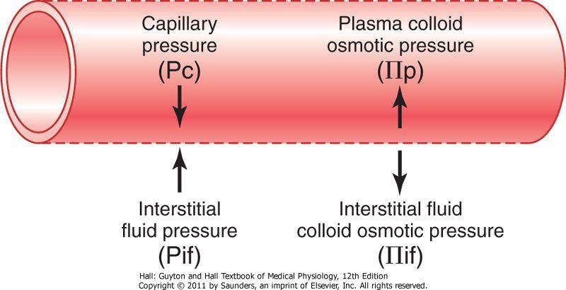
ארבעת הכוחות. החוצה: Pc, πi. פנימה: πc, Pi (אם חיובי; כשהוא שלילי הוא "מושך" החוצה).
"שני גדולים נלחמים, שני קטנים עוזרים": Pc (דוחף החוצה) נגד πc (מושך פנימה) – הם קובעים. Pi ו-πi קטנים. "P דוחף, π מושך": לחץ הידרוסטטי דוחף מתוך המקום שבו הוא נמצא, לחץ אונקוטי מושך אל המקום שבו הוא נמצא. "35-15-25": Pc מתחיל ב-35, נגמר ב-15, πc 25 באמצע – לכן הכיוון מתהפך באמצע.
πc מושך פנימה (ספיגה) – מסיח קלאסי אומר שהוא דוחף החוצה. πi דוחף החוצה (ברקמה, מושך אליו). ו-Pc יורד לאורך הנימה – לא קבוע ולא עולה.
לחץ הידרוסטטי לעומת לחץ אונקוטי Hydrostatic vs. Oncotic Pressureחובה
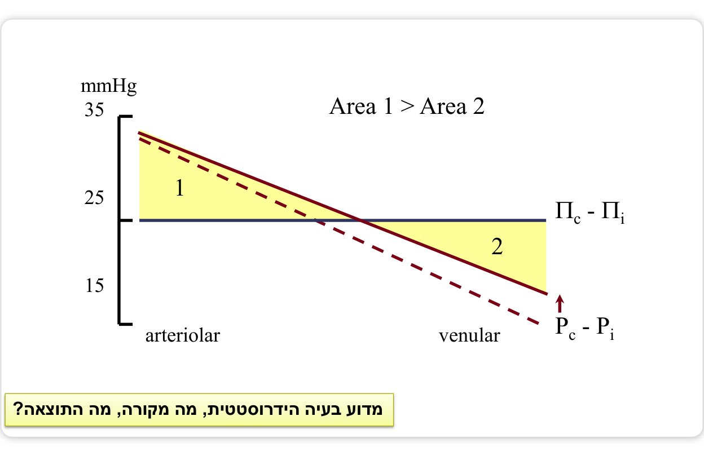
↑Pc (אי-ספיקת לב, חסימה ורידית): הנקודה שבה סינון הופך לספיגה זזה ימינה → יותר סינון → בצקת.
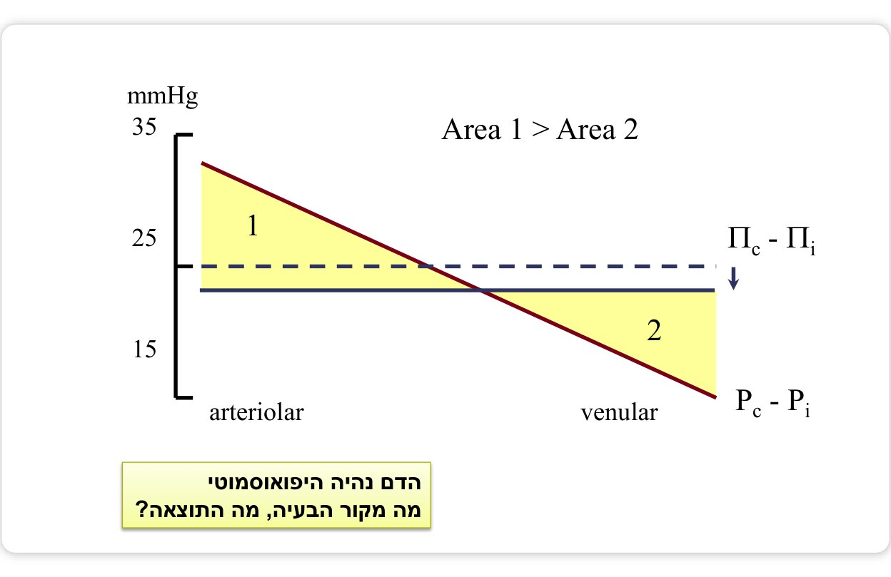
↓πc (היפואלבומינמיה): הקו של πc יורד → סינון לאורך כל הנימה → בצקת.
הידרוסטטי = לחץ של נוזל שדוחף על הדופן (נוצר מהלב ומכוח הכבידה). בנימה (Pc) דוחף נוזל החוצה; ברקמה (Pi) דוחף פנימה.
אונקוטי / קולואיד-אוסמוטי = לחץ אוסמוטי שנוצר ע"י חלבונים (לא ע"י יונים – אלה עוברים חופשי ולא יוצרים גרדיאנט בנימה). בנימה (πc, בעיקר אלבומין) מושך נוזל פנימה; ברקמה (πi) מושך החוצה.
Pc משתנה לאורך הנימה ולפי מצב העורקיק/הוורידון; πc קבוע לאורך הנימה ומשתנה רק עם ריכוז החלבון בדם.
הניגוד הקליני: בצקת מ-↑הידרוסטטי (אי-ספיקת לב ימין → רגליים; שמאל → ריאות; DVT; הריון) מול בצקת מ-↓אונקוטי (תסמונת נפרוטית, שחמת, רעב – בצקת כללית, anasarca, גם סביב העיניים).
האונקוטי קטן יחסית ללחץ האוסמוטי הכולל של הפלסמה (~5500 mmHg), אבל הוא היחיד שפועל דרך דופן הנימה כי רק החלבונים לא עוברים.
"הידרו דוחף, אונקו מושך". הידרוסטטי = משאבה (הלב) → "דוחף נוזל החוצה מהצינור". אונקוטי = ספוג (אלבומין) → "מושך נוזל אל הספוג". אלבומין = הספוג של הדם; בלי אלבומין (כבד, כליה) – המים בורחים לרקמה.
שלושה תפקידים: (1) להחזיר את 10% הנוזל שלא נספג (2–3 ל'/יום); (2) להחזיר חלבונים שדלפו לרקמה (הדרך היחידה! בלי זה πi עולה ועולה); (3) חיסון (בלוטות לימפה) + ספיגת שומנים מהמעי (chylomicrons).
איך זורמת: אין משאבה מרכזית. (1) שסתומים + כיווץ שריר חלק של כלי הלימפה (lymphangions); (2) משאבת שרירי שלד; (3) פעימות עורקים סמוכים; (4) תנועות נשימה. חוסר תנועה → בצקת (טיסה ארוכה).
זרימת הלימפה עולה עד פי 20 כש-Pi עולה – מנגנון הבטיחות העיקרי נגד בצקת. הגבול: כש-Pi חיובי מאוד הכלים נדחסים.
חסימת לימפה = לימפאדמה: ניתוח (כריתת בלוטות בשד), הקרנות, פילאריאזיס (אלפנטיאזיס), גידול. בצקת עשירה בחלבון, לא נענית למשתנים.
הלימפה = "ביוב של הרקמה": לוקחת את מה שהוורידים לא לקחו (10%) ובעיקר את החלבונים – שרק היא יכולה לסלק. אין משאבה: "תזוזה = ניקוז" (שרירים, נשימה, שסתומים). חסימה = בצקת "עם חלבון".
בצקת Edemaחובה
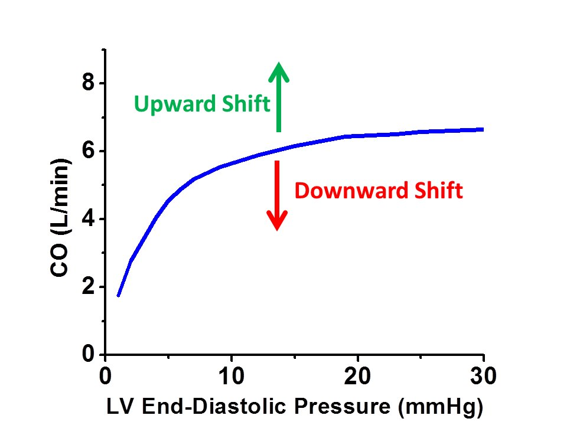
ארבעת המנגנונים על עקומת הסינון: ↑Pc, ↓πc, ↑חדירות/πi, ↓ניקוז לימפה.
בצקת = הצטברות נוזל באינטרסטיציום כשהסינון הנטו עולה על יכולת הלימפה (או שהלימפה חסומה). חוזרים לנוסחת סטרלינג – ארבע סיבות בלבד:
לימפאדמה – מקומי, עשיר בחלבון, לא נענה למשתנים, "non-pitting" בהמשך
גורמי בטיחות נגד בצקת (למה לא מתנפחים כל יום): (1) Pi שלילי – צריך ~3 mmHg עלייה; (2) ↑זרימת לימפה עד ×20 (~7 mmHg); (3) שטיפת חלבון מהרקמה ע"י הלימפה מורידה πi (~7 mmHg). סה"כ ~17 mmHg "רזרבה" לפני בצקת גלויה. היענות הרקמה נמוכה בתחילה ואז קופצת – לכן בצקת מופיעה "בבת אחת".
בצקת ריאות: Pc ריאתי ~7 mmHg; πc 25 → רזרבה גדולה; מופיעה כשלחץ העלייה השמאלית > ~25–30 mmHg (אי-ספיקת לב שמאל, היצרות מיטרלית).
"לב – כבד – כליה – לימפה": לב = הידרוסטטי ↑; כבד/כליה (ורעב) = אונקוטי ↓ (אין אלבומין); דלקת = חדירות; לימפה = חסימה. או: "דוחף יותר, מושך פחות, דולף, או לא מתנקז" – ארבע מילים, ארבע סיבות. ולמה רגליים? כבידה מעלה Pc (ρgh).
בצקת מדלקת היא עשירה בחלבון (exudate); מאי-ספיקת לב – דלה (transudate). ולימפאדמה לא נענית למשתנים. אם השאלה "איזה מהבאים לא גורם לבצקת" – חפשו: כיווץ עורקיקים (↓Pc), עירוי אלבומין (↑πc), ↑Pi.
הרעיון במשפט: הלב וכלי הדם מכוונים כל שנייה ע"י שתי זרועות אוטונומיות מנוגדות (סימפתטי "גז", פרה-סימפתטי "בלם"), שמופעלות ע"י רפלקסים (ברו – לחץ; ביינברידג׳ – נפח; כימו – גזים) ומתוגברות ע"י הורמונים. המטרה: לשמור MAP = CO × TPR ולהתאים CO לדרישה.
בקרה עצבית ורפלקסים
מערכת העצבים האוטונומית Autonomic Nervous Systemחובה
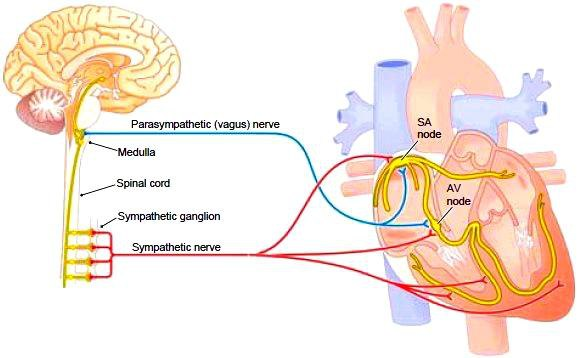
עצבוב: ואגוס → SA, AV, עליות (כמעט לא חדרים). סימפתטי → כל הלב + כלי הדם.
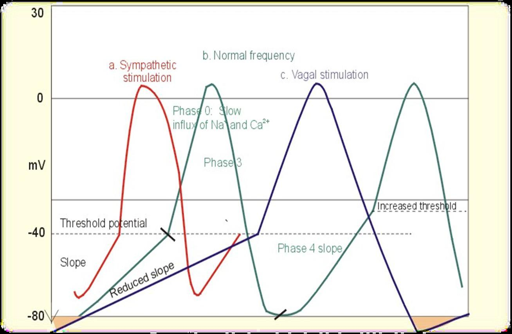
על הקוצב: סימפתטי – שלב 4 תלול; ואגוס – שטוח + היפר-פולריזציה.
שתי זרועות: סימפתטי (T1–L2, גנגליונים פרה-ורטברליים, NE על אדרנרגיים) ופרה-סימפתטי (ואגוס X, ACh על מוסקריניים M2).
העצבוב בלב: ואגוס → SA (ימני), AV (שמאלי), שריר העליות; כמעט לא לחדרים → ואגוס משנה HR והולכה, כמעט לא כיווציות חדרית. סימפתטי → כל הלב (SA, AV, עליות, חדרים) + כל כלי הדם (עורקיקים, ורידים).
בכלי הדם: בעיקר סימפתטי (α1 כיווץ); אין עצבוב פרה-סימפתטי משמעותי לרוב כלי הדם (חוץ מאיברי מין, בלוטות רוק). הרחבה = בעיקר הפחתת טונוס סימפתטי (וגם β2, NO).
הטונוס במנוחה: ואגלי שולט על ה-SA (100 → 70); סימפתטי טוני על כלי הדם (שומר TPR; חסימה → לחץ דם צונח ל-50).
מהירות: ואגוס פועל מהר (ACh מתפרק בשניות; תגובה תוך פעימה אחת); סימפתטי איטי יותר (שניות–דקות, גם מצטבר).
"ואגוס – למעלה בלב; סימפתטי – בכל מקום": הואגוס מגיע לקוצבים ולעליות (למעלה), הסימפתטי לחדרים ולכלי הדם. "גז = סימפתטי, בלם = ואגוס", ובמנוחה הרגל על הבלם.
סימפתטי לעומת פרה-סימפתטי Sympathetic vs. Parasympatheticחובה
סימפתטי Sympathetic
פרה-סימפתטי Parasympathetic (ואגוס)
מוליך ורצפטור
NE (ואפינפרין מהאדרנל) על β1 בלב, α1 בכלי דם, β2 בעורקיקי שריר/כליליים
ACh על M2 (מוסקריני) – Gi → ↓cAMP, פתיחת K⁺
HR (כרונוטרופי)
↑ (↑If, ↑ICa; שלב 4 תלול)
↓ (↓If, ↑IK,ACh → היפר-פולריזציה)
הולכה ב-AV (דרומוטרופי)
↑ (PR מתקצר)
↓ (PR מתארך; חסם AV בטונוס גבוה)
כיווציות (אינוטרופי)
↑↑ (עליות וחדרים; cAMP → PKA → ↑Ca²⁺)
↓ קל, בעיקר עליות; כמעט לא בחדרים
הרפיה (לוסיטרופי)
↑ (פוספולמבן → SERCA)
—
עורקיקים
כיווץ (α1) → ↑TPR, ↑BP; הרחבה בשריר (β2) ובכליליים
כמעט אין השפעה ישירה
ורידים
כיווץ → ↓קיבולת → ↑החזר ורידי → ↑preload
—
CO, BP
↑↑
↓ (דרך HR בלבד)
מהירות / משך
איטי יחסית (שניות), ממושך; הורמונלי מהאדרנל – דקות
אפינפרין (אדרנלין): מהמדולה של האדרנל (80% Epi, 20% NE), הורמון בדם. פועל גם על β2 (הרחבת עורקיקי שריר שלד, ברונכים) – לכן במינון נמוך מוריד TPR, במינון גבוה (α) מעלה.
אצטילכולין (ACh): ואגוס → M2 בקוצבים ובעליות: Gi → ↓cAMP (↓If, ↓ICa) + פתיחה ישירה של IK,ACh (דרך βγ) → היפר-פולריזציה, קיצור AP עלייתי. מתפרק מיידית ע"י אצטילכולין-אסטראז → השפעה מהירה וקצרה. (ACh גם על אנדותל → NO → הרחבה – מינורי.)
הקולטנים הפרה-גנגליוניים בשתי המערכות: ACh על ניקוטיניים.
"NE → β1 → cAMP ↑ → סידן ↑ → הכול ↑"; "ACh → M2 → cAMP ↓ + אשלגן ↑ → הכול ↓". cAMP הוא המתג: למעלה = מהר וחזק, למטה = לאט. אסטראז = "מחיקה מיידית" – לכן הואגוס מגיב תוך פעימה.
תכונות: הרפלקס המהיר ביותר (שניות); טווח עבודה 60–180 mmHg, הרגיש ביותר סביב 100; הקרוטידי רגיש יותר ומתחיל נמוך יותר מהאאורטלי. מתאפס (resetting) תוך 1–2 ימים ללחץ החדש → לא שולט על לחץ דם לטווח ארוך (זה הכליות). תפקידו: "בלם לתנודות" (buffer).
"לחץ עולה – הלב נרגע": ברו = בלם אוטומטי. ↑BP → ↑ירי → ↑ואגוס → ↓HR (הכול "↑" חוץ מהתוצאה). קימה = הפוך. "רגיש ב-100, עובד 60–180, מתאפס ביומיים" – שלושת המספרים. "9 ו-10": קרוטיד = IX, אאורטה = X.
הברורצפטורים חשים לחץ (מתיחה), לא O₂ – זה הכימורצפטורים. הם לא מנגנון לטווח ארוך (מתאפסים). ו-↑לחץ גורם ל-↑ירי (לא ↓).
רפלקס ביינברידג׳ Bainbridge Reflexחובה
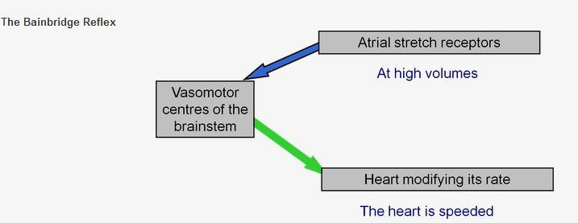
עירוי נפח → מתיחת העלייה הימנית → ↑HR (אם ה-HR הראשוני נמוך).
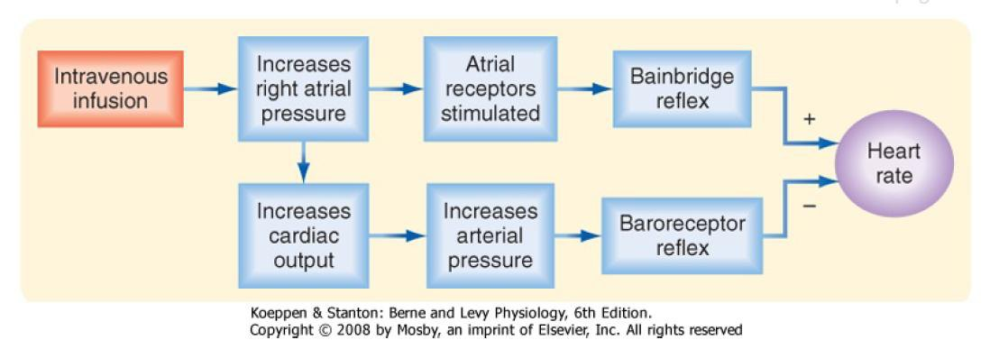
ברו מול ביינברידג׳: HR התחלתי נמוך → ביינברידג׳ מנצח (↑HR); HR גבוה → ברו מנצח (↓HR).
הגירוי:↑החזר ורידי / ↑נפח דם → מתיחת העלייה הימנית וכניסות הוורידים הגדולים → קולטני מתיחה עלייתיים (סוג B) → אפרנטים ואגליים → מדולה.
התגובה:↑HR (↑סימפתטי ל-SA, ↓ואגוס) – כדי לפנות את העודף מהר ולמנוע גודש ורידי. גם קצת ↑כיווציות. אפקט ישיר נוסף: מתיחה מכנית של ה-SA מעלה את קצבו (~15%).
ההבדל מברו: ברו מגיב ללחץ ומוריד HR כשהלחץ עולה; ביינברידג׳ מגיב לנפח ומעלה HR. בעירוי נפח שניהם מופעלים – התוצאה תלויה ב-HR ההתחלתי: HR נמוך → ביינברידג׳ שולט (↑HR); HR גבוה → ברו שולט (↓HR).
ANP: אותה מתיחה עלייתית משחררת ANP → נטריאורזיס, הרחבה → מסלקים את עודף הנפח (זרוע הורמונלית, איטית יותר).
הפרעת קצב סינוס נשימתית נשענת עליו חלקית: שאיפה → ↑החזר ורידי → ביינברידג׳ → ↑HR.
בולט בחיות (כלב) יותר מבאדם; באדם רואים אותו בעירוי מהיר ובהריון.
"ביינברידג׳ = Bridge ל-Bigger volume → Beat faster". דימוי: עלייה מלאה מדי = "שקית מנופחת" → הלב מזדרז לפנות. ברו = לחץ → ↓HR; ביינברידג׳ = נפח → ↑HR – ההפך זה מזה, ולכן מי ש"מנצח" תלוי בנקודת המוצא.
ביינברידג׳ מעלה HR – לא מוריד. אם מסיח אומר "עירוי נוזלים מעלה HR דרך הברורצפטורים" – שגוי (ברו היה מוריד); ההעלאה היא ביינברידג׳.
רפלקס הכימורצפטורים Chemoreceptor Reflex
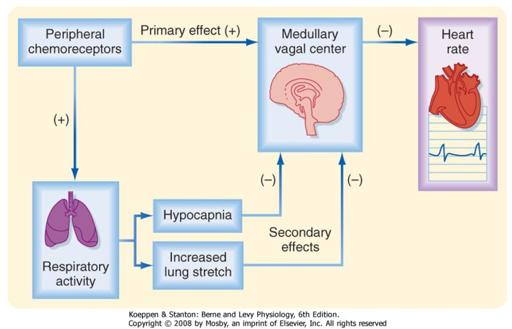
↓O₂ / ↑CO₂ / ↓pH → גופיפי קרוטיד ואאורטה → ישירות ↓HR + כיווץ כלי דם; דרך ↑נשימה → ↑HR.
החיישנים:גופיפי הקרוטיד (IX) וגופיפי האאורטה (X) – פריפריים; רגישים ל↓PO₂ (בעיקר מתחת ל-60), ↑PCO₂, ↓pH. (כימורצפטורים מרכזיים במדולה – ל-CO₂/pH, בעיקר נשימה.)
ההשפעה הראשונית (ישירה) על הלב:ברדיקרדיה (↑ואגוס) + כיווץ כלי דם היקפי (↑סימפתטי) → ↑BP. הגיון: לחסוך חמצן ולהפנות דם למוח וללב (כמו רפלקס הצלילה).
ההשפעה המשנית: הכימורצפטורים מגבירים נשימה → קולטני מתיחה בריאות + עיכוב מרכז הואגוס → ↑HR. בבן אדם שנושם חופשי האפקט הנטו הוא לרוב טכיקרדיה; בעצירת נשימה/צלילה – ברדיקרדיה.
כגיבוי ללחץ דם: מופעלים גם כשלחץ הדם צונח מתחת ל-~80 mmHg (זרימה נמוכה לגופיפים → היפוקסיה מקומית) → ↑סימפתטי. חשוב בהלם, פחות רגיש מברו בטווח הנורמלי.
נשענים על זרימה גבוהה ביותר לגרם רקמה בגוף – "חשים" את הדם העורקי בזמן אמת.
"כימו: ישר – לאט, דרך הריאות – מהר". ישירות = ברדיקרדיה + כיווץ (כמו צוללן); דרך הנשימה = טכיקרדיה. ברו = לחץ, כימו = גזים, ביינברידג׳ = נפח. סף ה-O₂: 60; סף הלחץ לכימו: 80.
אם השאלה מדגישה "ההשפעה הישירה של הכימורצפטורים על הלב" – ↓HR. אם "התגובה הכוללת באדם נושם" – ↑HR. ההבחנה הזאת היא כל השאלה.
ויסות קצב הלב Heart Rate Regulationחובה
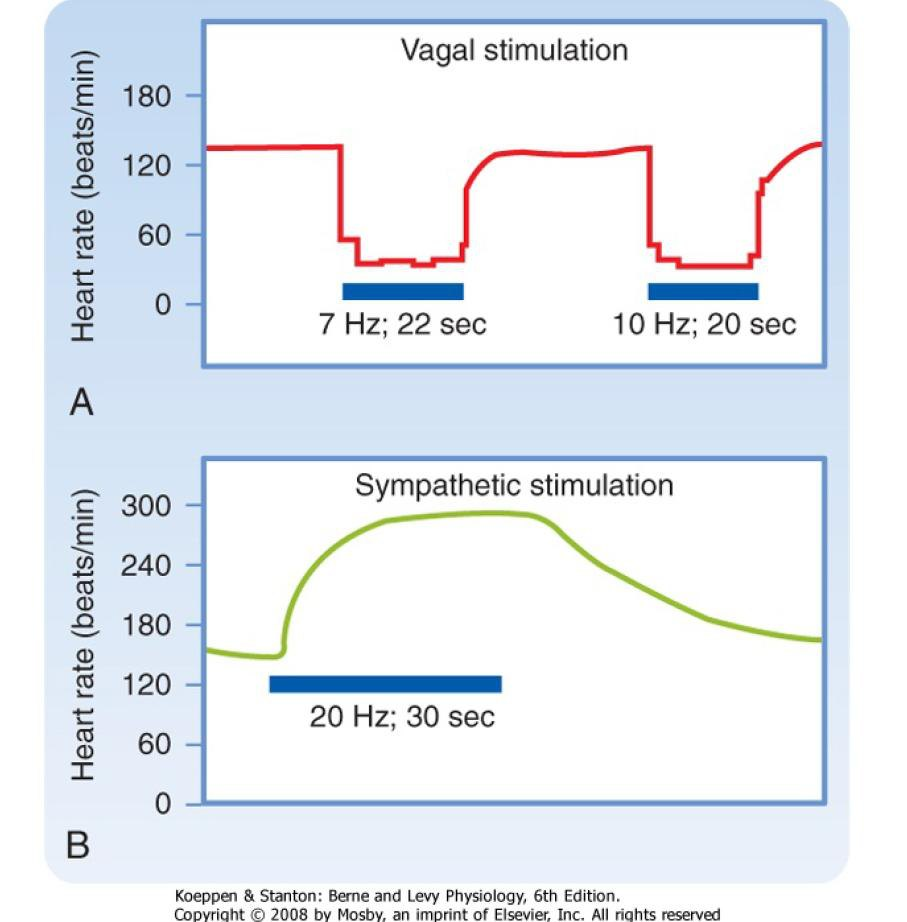
תדר גירוי מול HR: ואגוס מוריד בתלילות; סימפתטי מעלה.
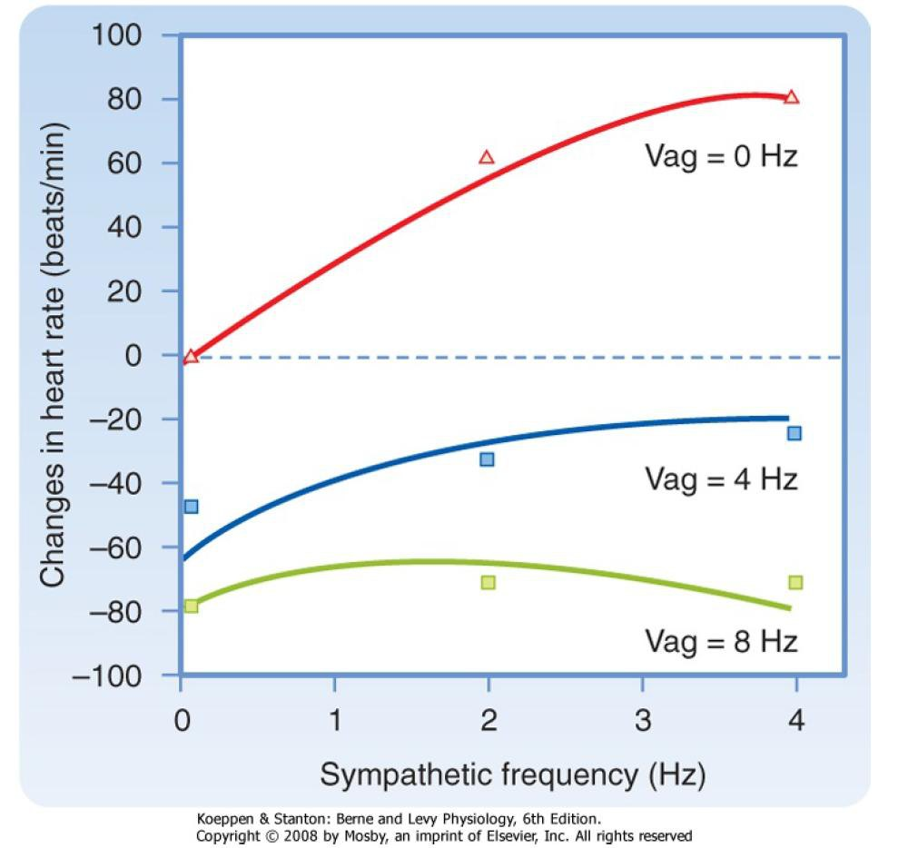
אינטראקציה: כשהואגוס פעיל חזק, הסימפתטי כמעט לא משפיע (accentuated antagonism).
נקודת המוצא: הקצב העצמי של SA ≈ 100; במנוחה ≈ 70 בגלל טונוס ואגלי דומיננטי. לב מושתל/מנותק = ~100.
העלאת HR: בטווח 70→100 בעיקר ע"י הסרת ואגוס (מהיר); מעל 100 ע"י הוספת סימפתטי (+ אפינפרין). ירידה: הוספת ואגוס. הואגוס "חזק יותר": כשהוא מופעל חזק הסימפתטי כמעט לא עובד (accentuated antagonism, ACh מעכב שחרור NE).
המנגנון התאי: שינוי שיפוע שלב 4 (If, ICa,T), פוטנציאל דיאסטולי מקסימלי (IK,ACh) וסף (ICa,L).
HR ו-CO: CO עולה עם HR עד ~150–180; מעבר לזה הדיאסטולה קצרה מדי → ↓EDV → ↓SV → ↓CO. גם זרימה כלילית נפגעת (היא דיאסטולית).
הפרעת קצב סינוס נשימתית = HR שמשתנה עם הנשימה – סימן לטונוס ואגלי בריא.
"100 בלי בלמים, 70 עם בלם, 180 – התקרה". "ואגוס מוריד, סימפתטי מעלה, חום מעלה, קור מוריד, אשלגן מוריד". במאמץ הסדר: קודם מורידים את הרגל מהבלם (ואגוס), אחר כך לוחצים גז (סימפתטי).
השפעות אינוטרופיות, כרונוטרופיות ודרומוטרופיות Inotropic, Chronotropic, Dromotropicחובה
"כרונו-שעון, אינו-כוח, דרומו-דרך, לוסי-להרפות". דיגוקסין הוא המלך של השאלות: אינו +, כרונו −, דרומו − ("מחזק, מאט, חוסם") – לכן טוב לאי-ספיקה עם פרפור עליות. ואגוס: רק כרונו ודרומו (− −), כי הוא לא מגיע לחדרים.
V2: ספיגת מים בכליה; V1: כיווץ כלי דם (במינונים גבוהים – הלם)
↑נפח, ↑BP
"אדרנלין – מהיר וחזק; תירואיד – איטי ומכין את הקרקע (יותר קולטנים); ANP – מוריד את הנפח". ANP = Anti-Nefach-Peptide: "העלייה מנופחת → תשתין". תירואיד = "מגביר את עוצמת הרמקול של הסימפתטי" (β1 ↑) – לכן β-blocker מרגיע היפרתירואידיזם.
ANP מוריד לחץ דם ונפח (לא מעלה). אפינפרין במינון נמוך מוריד DBP/TPR (β2) – לא תמיד "מכווץ". תירואיד מוריד TPR למרות ש-CO עולה.
תפוקת הלב CO = SV × HR – בהקשר של בקרה
מה הגוף מכוון בפועל: את ה-CO בהתאם לדרישת החמצן של הרקמות (CO ≈ VO₂ / הפרש a-v). במאמץ: ↑HR (×2.5–3) ו-↑SV (×1.3–1.5) → CO ×4–5. בחימום/אנמיה/היפרתירואידיזם – high output.
CO = החזר ורידי – הלב לא יכול לפלוט יותר ממה שחוזר. לכן כל מה שמעלה החזר ורידי (כיווץ ורידים סימפתטי, משאבת שרירים, נשימה, נפח דם) מעלה CO דרך פרנק-סטרלינג.
המגבילים: HR קיצוני (↓מילוי), afterload גבוה, ↓כיווציות, ↓נפח. גורמי Guyton: CO נקבע ע"י הפריפריה (דרישה, התנגדות) כשהלב בריא – הלב "משרת"; בלב חולה הלב הוא המגביל.
הקשר ל-BP:MAP = CO × TPR. במאמץ CO ↑↑ אך TPR ↓↓ (הרחבת שרירים) → MAP עולה רק מעט; SBP ↑, DBP ≈. בדימום CO ↓ אך TPR ↑ → MAP נשמר בתחילה (ברו).
"הלב פולט מה שחוזר; הרקמה קובעת כמה". בכל שאלת "מה יקרה ל-CO" – שני מכפילים (SV, HR), ואם מדברים על BP – מכפיל שלישי (TPR).
התנגדות היקפית Peripheral Resistance, TPR – בהקשר של בקרה
TPR נשלט ברובו ע"י הטונוס הסימפתטי של העורקיקים (α1). הטונוס הטוני במנוחה חיוני: חסימה (הרדמה ספינלית גבוהה, פגיעה בחוט שדרה) → TPR צונח → לחץ דם ~50 (הלם נוירוגני).
בקרה מקומית גוברת על הסיסטמית באיברים חיוניים (מוח, לב, שריר פעיל): במאמץ הסימפתטי מכווץ את העור/מעי/כליה ("steal" לטובת השרירים) אך לא מצליח לכווץ את השריר העובד.
TPR הוא הגורם השני ל-MAP: MAP = CO × TPR. ביתר לחץ דם כרוני – TPR ↑ (היפרטרופיה של העורקיקים) ו-CO תקין.
TPR = "כמה סגורים כל הברזים"; הסימפתטי הוא היד על הברזים, המטבוליטים המקומיים פותחים אותם בכוח. במאמץ: ברזי השריר נפתחים (TPR ↓), ברזי המעי נסגרים.
למה "שליש": הדיאסטולה ארוכה מהסיסטולה (~⅔ מהמחזור), לכן הממוצע לאורך זמן קרוב יותר ל-DBP.
MAP הוא הלחץ שמניע את הפרפוזיה לאיברים (Q = (MAP − Pvenous)/R). לחץ פרפוזיה למוח ≈ MAP − ICP. MAP <60–65 → פרפוזיה לא מספקת (הלם).
שני קובעים בלבד: CO (= SV × HR) ו-TPR. כל סיפור בבוחן מתפרק אליהם: דימום (↓SV → ↓CO; ברו: ↑HR, ↑TPR); מאמץ (↑↑CO, ↓TPR → MAP ↑ מעט); אטרופין (↑HR → MAP ↑ מעט); ספסיס (↓↓TPR → ↓MAP למרות CO ↑).
הפרופיל: SBP נקבע בעיקר ע"י SV והיענות העורקים; DBP בעיקר ע"י TPR ו-HR (יותר זמן לדיאסטולה = DBP נמוך יותר); PP = SV/C.
טווח קצר (שניות): ברו, כימו, ישמי (CNS ischemic response). טווח ארוך (ימים): כליות – נפח (RAAS, ADH, ANP, לחץ-נטריאורזיס). לכן ברו לא מסביר יתר לחץ דם כרוני.
"דיאסטולי ועוד שליש דופק": 80 + 40/3 = 93. "MAP = CO × TPR = (SV × HR) × TPR" – עץ של 3 ענפים (ו-SV מתפצל ל-P-A-C). קצר-טווח = עצבים, ארוך-טווח = כליות.
MAP אינו (SBP + DBP)/2 – זה 100, לא 93. ובמאמץ MAP עולה מעט בלבד (TPR יורד) למרות ש-CO עולה פי 4–5.
מושגים נוספים מהמצגת
בקרה מקומית לעומת סיסטמית על נפח הפעימה Intrinsic vs. Extrinsic Regulation of SVחובה
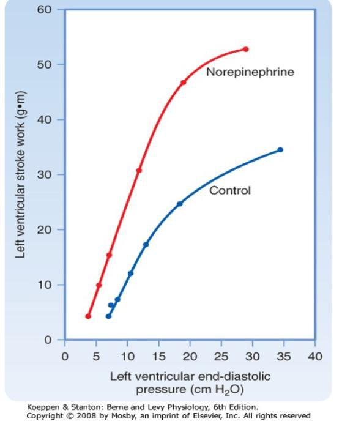
intrinsic (לאורך העקומה) מול extrinsic (בין עקומות): NE מרים את כל העקומה.
עובד – זה מה שמאפשר למושתלים להתאמץ (יחד עם קטכולאמינים בדם)
העצבי לא עובד; ההורמונלי כן
Intrinsic = "הלב לבד": אורך (פרנק-סטרלינג) וקצב (מדרגות). Extrinsic = "מישהו אומר לו": עצבים, הורמונים, דם. "לאורך העקומה = intrinsic, בין העקומות = extrinsic". לב מושתל = רק intrinsic + הורמונים.
"פרנק-סטרלינג הוא מנגנון extrinsic" – שגוי. "סימפתטי מגדיל SV רק דרך כיווציות" – חלקי: גם דרך ↑החזר ורידי (ורידים) = ↑preload.
בקרה תלוית קצב Rate-Induced Regulation (Bowditch / Treppe / Staircase)
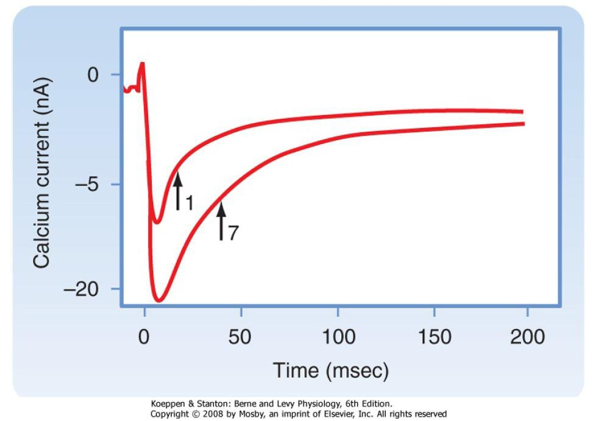
↑קצב → יותר AP לדקה → יותר כניסת Ca²⁺ ופחות זמן ל-NCX → Ca²⁺ מצטבר ב-SR.
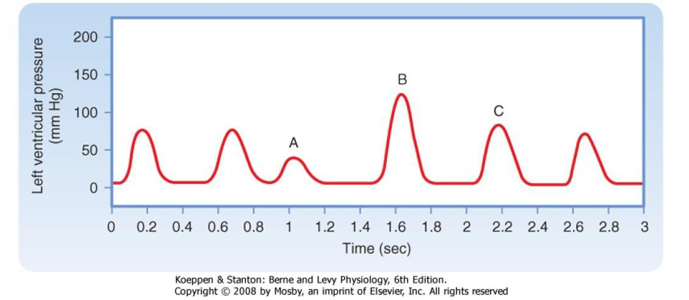
פעימה מוקדמת: חלשה (↓מילוי, סידן לא התאושש); הפעימה הבאה מוגברת (post-extrasystolic potentiation).
התופעה: כשמעלים את קצב הגירוי בפתאומיות, כוח הכיווץ עולה בהדרגה לאורך כמה פעימות ("מדרגות") עד פלטו חדש וגבוה.
המנגנון: יותר AP בדקה = יותר זמן בפלטו = יותר Ca²⁺ נכנס דרך L-type; פחות זמן דיאסטולי ל-NCX להוציא; ↑Na⁺ תוך-תאי (יותר שלבי 0) מאט את NCX עוד → Ca²⁺ מצטבר ב-SR → שחרור גדול יותר בכל פעימה → ↑כיווציות.
זה מנגנון intrinsic homeometric (לא תלוי אורך) – יעיל גם בלב מנותק.
חשיבות: במאמץ, ↑HR לא רק מכפיל את CO אלא גם מחזק כל פעימה; וכדי שהחיזוק יעזור כש-הדיאסטולה מתקצרת, הסימפתטי גם מזרז הרפיה (לוסיטרופיה) ומקצר את ה-AP.
פעימה מוקדמת (extrasystole): חלשה (זמן מילוי קצר → ↓preload; סידן טרם "הוטען" מחדש), ואחריה הפסקה מפצה ופעימה חזקה מהרגיל (↑מילוי + ↑Ca²⁺ ב-SR) – post-extrasystolic potentiation.
בלב באי-ספיקה האפקט נעלם או מתהפך (SERCA פגוע) – מדרגות שליליות.
"מהר יותר – חזק יותר, כי הסידן לא מספיק לצאת". Treppe = גרם מדרגות (גרמנית). פעימה מוקדמת = "צעד קטן, ואז קפיצה" (חלשה ואז מוגברת).
הפרעת קצב סינוס נשימתית Respiratory Sinus Arrhythmia
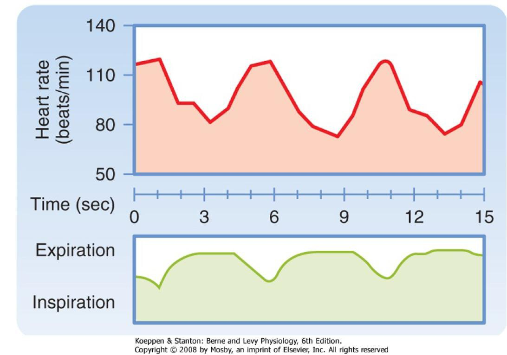
HR עולה בשאיפה, יורד בנשיפה. P תקין לפני כל QRS; רק המרווח RR משתנה מחזורית.
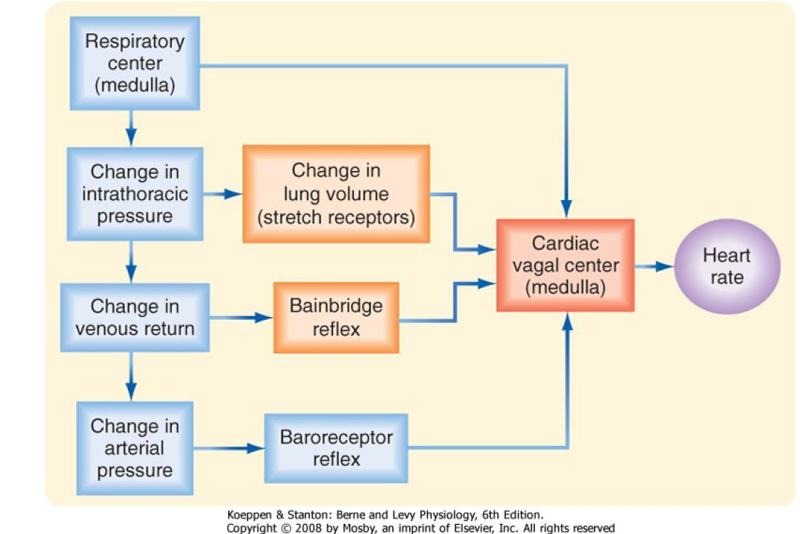
המנגנונים: ↓לחץ תוך-חזי → ↑VR → ביינברידג׳; מרכז הנשימה מעכב את הואגוס; ברו (ל-BP שמשתנה).
מה זה: שינוי תקין ומחזורי ב-HR עם הנשימה: שאיפה → HR ↑, נשיפה → HR ↓. אק"ג: קצב סינוס תקין (P לפני כל QRS), RR משתנה בצורה סדירה-מחזורית.
המנגנונים: (1) בשאיפה הלחץ התוך-בית-חזי שלילי יותר → ↑החזר ורידי → מתיחת העלייה הימנית → ביינברידג׳ → ↑HR; (2) מרכז הנשימה במדולה מעכב את מרכז הואגוס בשאיפה (gating מרכזי); (3) קולטני מתיחה בריאות → ↓ואגוס; (4) שינויי לחץ דם עם הנשימה → ברו. בנשיפה – הכול הפוך, הואגוס חוזר.
משמעות: סימן לטונוס ואגלי בריא – בולט בילדים, צעירים וספורטאים; נעלם בגיל, בנוירופתיה אוטונומית (סוכרת), באי-ספיקת לב ובלב מושתל. היעלמותו = פרוגנוזה גרועה יותר.
לא פתולוגיה, לא דורש טיפול – למרות השם "הפרעת קצב".
"שואפים – הלב מזדרז, נושפים – נרגע". שאיפה = "ואקום בחזה" → הדם נשאב ללב (ביינברידג׳) + מרכז הנשימה "משתיק" את הואגוס. יש RSA = ואגוס בריא.
אטרופין ופרופרנולול Atropine / Propranolol
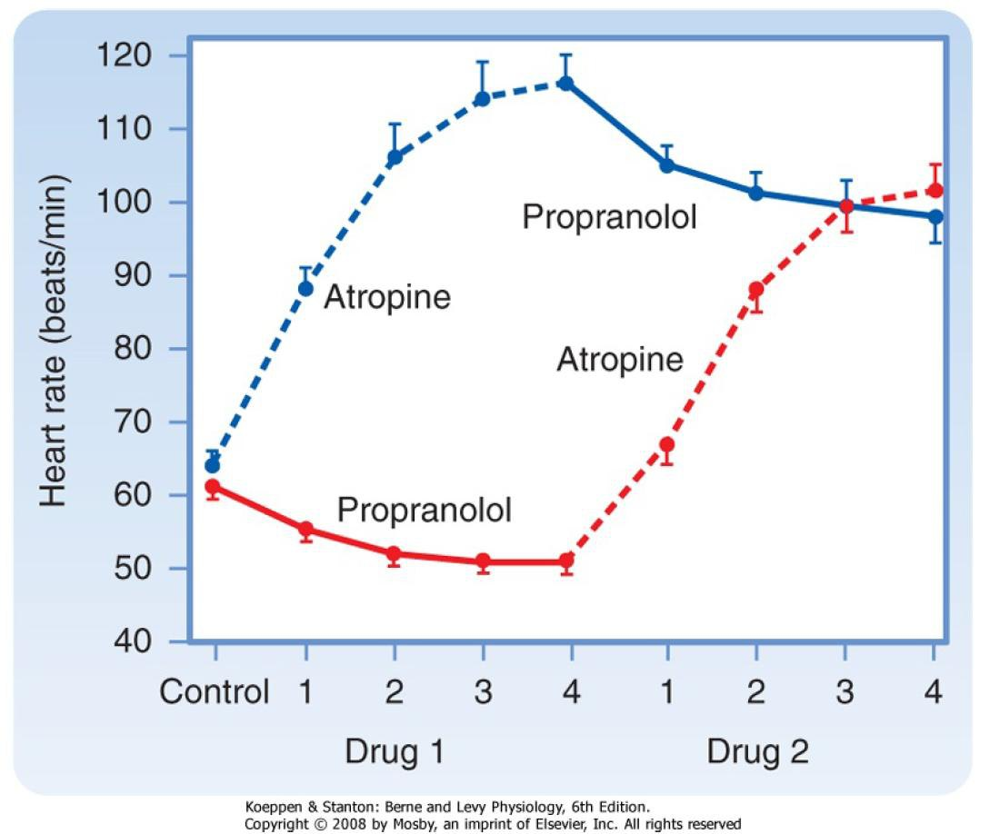
הניסוי הקלאסי: אטרופין → HR עולה ל-~100+ (הסרת הואגוס); פרופרנולול → HR יורד מעט (הסרת הסימפתטי); שניהם → ~100 = הקצב העצמי.
אטרופין Atropine
פרופרנולול Propranolol
מנגנון
חוסם קולטנים מוסקריניים (M2) → מנטרל את הואגוס (פרה-סימפתוליטי)
חוסם β1 ו-β2 (לא סלקטיבי) → מנטרל את הסימפתטי על הלב
HR במנוחה
↑ ל-~100–120 – חושף את הקצב העצמי של SA (מראה שבמנוחה הואגוס שולט)
↓ מעט (70 → 60) – במנוחה הסימפתטי תורם מעט
HR במאמץ
עליה נוספת קטנה
מגביל את עליית HR (חוסם את הטכיקרדיה של המאמץ)
הולכה AV / PR
↑ הולכה, PR מתקצר – טיפול בברדיקרדיה ובחסם AV ואגלי
↓ הולכה, PR מתארך – מאט פרפור עליות
כיווציות
≈ (ואגוס לא משפיע על חדרים)
↓ (אינוטרופי שלילי) → ↓צריכת O₂ של הלב – טוב לאנגינה
"אטרופין מסיר את הבלם – הלב רץ ל-100; פרופרנולול מסיר את הגז – כמעט לא מרגישים במנוחה". למה אסימטרי? כי במנוחה הרגל על הבלם (ואגוס), לא על הגז. A-tropine = Anti-ACh; Pro-pranolol = anti-β ("P ל-β-blocker" כמו שאר ה-olol).
אטרופין מעלה HR (לא מוריד) – הוא חוסם את מה שמוריד. אם נותנים אטרופין ואז פרופרנולול, הפרופרנולול מוריד מ-120 ל-100 (לא ל-70) – ה-70 דורש ואגוס.
ההשפעה הדו-שלבית של החמצן על הלב Biphasic Effect of O₂ / Hypoxia
שלב 1 – היפוקסיה קלה-בינונית (PO₂ ~60–80): ↑ביצועי הלב. מנגנון: כימורצפטורים → ↑סימפתטי, ↑קטכולאמינים מהאדרנל → ↑HR, ↑כיווציות, ↑CO (וגם ↑נשימה → ↑HR). מקומית: היפוקסיה מרחיבה כלי דם כליליים (אדנוזין) → יותר דם ללב. בגובה: טכיקרדיה, CO ↑.
שלב 2 – היפוקסיה חמורה (PO₂ <~40–50) או ממושכת: ↓ביצועי הלב. מנגנון: אין O₂ → ↓ATP → SERCA ו-Na⁺/K⁺-ATPase נכשלים → Ca²⁺ לא מטופל, ↑Na⁺ ו-K⁺ חוץ-תאי; חמצת תוך-תאית (גליקוליזה → לקטט) → ↓רגישות לסידן; פתיחת KATP → קיצור AP; → ↓כיווציות, ↓HR (דיכוי ישיר של הקוצב + ואגוס מהכימו), אריתמיות (VF), ובסוף דום לב.
הנקודה לבוחן: ההשפעה אינה ליניארית – "קצת רע = טוב, הרבה רע = רע". העלייה הראשונית היא עקיפה (רפלקסית/הורמונלית); הירידה היא ישירה (מטבולית, בתא).
בלב מבודד (בלי עצבים/הורמונים) היפוקסיה רק מדכאת – מה שמוכיח שהשלב החיובי הוא extrinsic.
"קצת מחסור – הגוף נלחם (אדרנלין); הרבה מחסור – המנוע נכבה (אין ATP)". דימוי: עולה להר – הלב דוהר; צולל בלי אוויר – הלב נעצר. עקיף למעלה, ישיר למטה.
השפעת החמצת על ביצועי הלב Acidosisחובה
התוצאה: חמצת (pH <7.35; נשימתית מ-↑CO₂ או מטבולית מלקטט/קטונים/כליה) מדכאת את הלב: ↓כיווציות (אינוטרופי שלילי), ↓HR (ישירות על הקוצב; מתחת ל-pH ~7.1–7.2 גם הקטכולאמינים לא עוזרים), אריתמיות, והיענות ירודה לקטכולאמינים.
המנגנון – "הסידן חסום": (1) H⁺ מתחרה עם Ca²⁺ על טרופונין C → ↓רגישות המיופילמנטים לסידן (צריך יותר סידן לאותו כוח); (2) ↓זרם Ca²⁺ L-type (H⁺ מעכב את התעלה) ו-↓שחרור מ-RyR → פחות סידן בכל פעימה; (3) ↓פעילות מיוזין-ATPase ו-SERCA; (4) הפחתת רגישות β1 לקטכולאמינים (↓cAMP). (5) H⁺ נכנס לתא בתמורה ל-Na⁺ (NHE) → ↑Na⁺ → NCX הפוך → עומס סידן דיאסטולי → הרפיה פגומה ואריתמיות.
על כלי הדם: חמצת מרחיבה עורקיקים (↓TPR) בפריפריה → עם ↓CO = ↓לחץ דם; בריאות דווקא מכווצת (↑PVR).
ההקשר הקליני: הלם/דום לב → חמצת לקטית → הלב פחות מגיב לאדרנלין → מעגל רשע. לכן מתקנים חמצון/אוורור (ולעיתים ביקרבונט). היפרקפניה פועלת בעיקר דרך החמצת התוך-תאית שהיא יוצרת.
הקשר להיפוקסיה: היפוקסיה חמורה → גליקוליזה אנאירובית → לקטט → חמצת תוך-תאית – זה חלק ממנגנון הדיכוי של השלב השני.
"חמצת = סידן חסום": H⁺ "יושב על הכיסא של הסידן" בטרופונין, סוגר לו את הדלת (L-type) ומחליש את מי שקורא לו (β1). פחות סידן אפקטיבי = פחות כוח, פחות קצב, יותר אריתמיות. ולכלי דם: חמצת = הרחבה (מטבוליט מקומי).
חמצת לא מגבירה את תגובת הלב לקטכולאמינים – ההפך. ו"חמצת מכווצת את כלי הדם הסיסטמיים" – שגוי (מרחיבה; מכווצת רק בריאות).
טבלאות השוואה מהירות Quick comparisons
מה קורה ל-SV, ESV, EDV, EF – טבלת הזהב
מצב
Preload / EDV
ESV
SV
EF
HR
CO
הסבר במילה
עירוי נוזלים / שכיבה
↑
≈
↑
≈
↓ (ברו) / ↑ (ביינברידג׳ אם HR נמוך)
↑
פרנק-סטרלינג
דימום / עמידה
↓
≈/↓
↓
≈
↑ (ברו)
↓
↓VR; ברו מפצה ב-HR ו-TPR
גירוי סימפתטי / אפינפרין
≈ (↑ מכיווץ ורידים)
↓↓
↑
↑
↑
↑↑
כיווציות + כרונוטרופיה
גירוי ואגלי / אטרופין הפוך
↑ (זמן מילוי)
≈
↑ קל
≈
↓↓
↓
HR יורד, SV עולה מעט – CO יורד
↑afterload (יתר לחץ דם, היצרות אאורטלית)
≈ → ↑
↑
↓
↓
≈
↓
הדלת כבדה
הרחבת עורקיקים (↓afterload)
≈
↓
↑
↑
↑ (ברו)
↑
הדלת קלה
דיגוקסין
≈/↓
↓
↑
↑
↓
↑
אינו +, כרונו −, דרומו −
אי-ספיקת לב סיסטולית
↑↑
↑↑
↓
↓↓
↑ (פיצוי)
↓
ESPVR שטוח; הלולאה ימינה
מאמץ
↑
↓
↑
↑
↑↑
↑↑↑
הכול יחד; TPR ↓ ולכן MAP ↑ מעט
פרפור עליות
↓ (אין atrial kick)
≈
↓ ~20%
≈
לא סדיר, מהיר
↓
אין S4
חמצת / היפוקסיה חמורה
≈
↑
↓
↓
↓
↓
סידן חסום
היפוקסיה קלה / היפרתירואידיזם
≈
↓
↑
↑
↑
↑
סימפתטי / β1 ↑
שלושת הרפלקסים זה מול זה
ברורצפטורים
ביינברידג׳
כימורצפטורים
מה חשים
לחץ (מתיחת דופן עורקית)
נפח (מתיחת עלייה ימנית/ורידים)
גזים: ↓O₂, ↑CO₂, ↓pH
איפה
סינוס קרוטידי (IX), קשת אאורטה (X)
עלייה ימנית, כניסות SVC/IVC
גופיפי קרוטיד (IX), גופיפי אאורטה (X)
גירוי טיפוסי
↑BP (עירוי, שכיבה); ↓BP (קימה, דימום)
עירוי מהיר, שאיפה, הריון
היפוקסמיה, חנק, BP <80
תגובת HR
↑BP → ↓HR; ↓BP → ↑HR
↑HR
ישיר: ↓HR; דרך הנשימה: ↑HR
תגובת כלי דם
↑BP → הרחבה (↓TPR); ↓BP → כיווץ
—/קל
כיווץ (↑TPR)
מטרה
לייצב לחץ דם רגע-לרגע
לפנות עודף נפח, להתאים ימין-שמאל
לחסוך O₂, להפנות דם למוח/לב; גיבוי בהלם
מספר לזכור
60–180, רגיש ב-100, מתאפס ביומיים
תלוי ב-HR ההתחלתי
PO₂ <60; BP <80
תא מהיר מול איטי מול אק"ג – בשורה אחת
שלב
תא מהיר (חדר)
תא איטי (SA)
באק"ג
4
מנוחה יציבה −90 (IK1)
If + T-Ca → עולה לבד מ-−60
קו בסיס (TP)
0
Na⁺ נכנס, חד
Ca²⁺ (L) נכנס, מדורג
QRS (חדר) / P (עליות)
1
K⁺ חולף (Ito)
—
סוף QRS
2
פלטו: Ca²⁺ נכנס = K⁺ יוצא
—
מקטע ST
3
K⁺ יוצא (IK)
K⁺ יוצא
גל T
ארבע סיבות לבצקת מול ארבעת כוחות סטרלינג
כוח
כיוון
ערך
שינוי שגורם בצקת
דוגמה
Pc
החוצה
35 → 15
↑
אי-ספיקת לב, DVT, הריון, עמידה
πc
פנימה
~25
↓
נפרוטי, שחמת, רעב (אלבומין ↓)
Kf / πi
(חדירות) / החוצה
—
↑
דלקת, כוויה, אלרגיה
לימפה
מנקזת 10% + חלבון
2–3 ל'/יום
חסימה
כריתת בלוטות, פילאריאזיס
המספרים שחייבים Numbers
חשמל ואק"ג
SA / AV / פורקיניה (קצב עצמי)
70 (100 בלי ואגוס) / 40–60 / 30–40
סינוס תקין
60–100
מנוחה: מהיר / איטי
−90 / −60 mV
סף: מהיר / איטי
−70 / −40 mV
משך AP חדרי
200–300 ms
הולכה: AV / פורקיניה
0.02–0.05 / 1–4 מ'/שנ'
השהיית AV
~0.1 ש'
PR
0.12–0.20 ש' (3–5 משבצות)
QRS
<0.12 ש'
QTc
≤0.40–0.44 ש'
משבצת קטנה / גדולה
0.04 / 0.20 ש'
HR מהנייר
300 ÷ משבצות גדולות בין R-R
פרפור עליות – קצב העליות
400–600; חדרים 100–160
מכניקה
EDV / ESV / SV
~120 / ~50 / ~70 מ"ל
EF
55–70% (~60); <40% = HFrEF
CO מנוחה / מאמץ
5 / 20–25 ל'/דקה
מחזור ב-75/דקה
0.8 ש' (סיסטולה 0.3, דיאסטולה 0.5)
לחץ חדר שמאל
~5–10 דיאסטולי → 120 סיסטולי
לחץ אאורטה
120/80, אאורטלי נפתח ב-~80
לחץ חדר ימין / ריאתי
25/5 · 25/8
atrial kick
~20% מהמילוי
HR שבו CO מתחיל לרדת
~150–180
סרקומר אופטימלי
2.2 µm
כלי דם ונימים
MAP
DBP + ⅓PP ≈ 93
PP
40 (= SV/C)
TPR
~18–20 PRU; ריאתי ~1/7
רדיוס ×2
זרימה ×16
היענות ורידים : עורקים
24 : 1
נפח דם בוורידים / נימים
~64–67% / ~5%
המטוקריט
40–45%; צמיגות דם ≈3× מים
ריינולדס לטורבולנציה
>2000–3000
Pc עורקי → ורידי
35 → 15 mmHg
πc
~25 (28) mmHg
Pi / πi
~−3 / ~8 mmHg
ספיגה / לימפה
90% / 10% (2–3 ל'/יום)
רזרבה נגד בצקת
~17 mmHg; לימפה ×20
בצקת ריאות מתחילה
לחץ עלייה שמאלית >25–30
בקרה
טווח ברו / רגיש ב / מתאפס
60–180 / 100 / 1–2 ימים
כימו מתעורר
PO₂ <60; BP <80
אטרופין → HR
~100–120
אטרופין + פרופרנולול
~100 (עצמי)
לב מושתל
~100, בלי RSA
חום
+10 פעימות ל-1°C
TPR בלי סימפתטי
BP צונח ל-~50
CO במנוחה: כליות / מוח / לב
20–25% / 15% / 5%
היענות הרקמה לפני בצקת
Pi צריך לעלות ~3 mmHg
25 המלכודות הנפוצות Common traps
שלב 0 בקוצב = Ca²⁺, לא Na⁺. Na⁺ בקוצב הוא If בשלב 4.
שלב 2 (פלטו) הוא איזון Ca²⁺ נכנס / K⁺ יוצא – לא "אין תנועת יונים".
ERP מסתיים לפני סוף ה-AP (אמצע שלב 3), והוא תכונה חיובית (אין טטנוס).
הקוצב הדומיננטי הוא המהיר, לא "החזק". ה-AV node הוא המעבר היחיד מהעליות לחדרים.
PR = השהיית AV; ארוך מ-0.20 = חסם דרגה 1. QRS = חדרים; רחב = מקור חדרי.
בפרפור עליות QRS צר, אין P, RR לא סדיר. S4 לא קיים.
גל T חיובי כי הרה-פולריזציה בכיוון הפוך לדה-פולריזציה. רה-פולריזציית עליות מוסתרת ב-QRS.
וויגרס: A סגירת מיטרלי, B פתיחת אאורטלי, C סגירת אאורטלי, D פתיחת מיטרלי. פליטה = 2. מסתם משנה מצב איפה שעקומת החדר חוצה עקומה אחרת.
"כל המסתמים פתוחים" לא קורה. "כולם סגורים" – פעמיים (איזו-וולומטרי).
S1 = סגירת AV, S2 = סגירת סמילונריים. קולות הם סגירה, לא פתיחה. S3 מילוי, S4 עלייה.
PV loop: C = EDV = preload; D = פתיחת אאורטלי; SV = D–F; קו ימני עולה = כיווץ איזו-וולומטרי.
↑preload לא משנה כיווציות (פרנק-סטרלינג = אורך). ESV נשאר, EF כמעט לא משתנה.
↑afterload מקטין SV ומגדיל ESV. לא מגדיל SV.
EF הוא מדד כיווציות – עולה עם כיווציות, לא עם preload.
בלב חובה סידן חוץ-תאי (CICR); בשריר שלד לא.
בנימים המהירות הנמוכה, לא הזרימה. הזרימה הכוללת זהה בכל חתך.
רוב הדם בוורידים (~2/3), הנפילה הגדולה בלחץ בעורקיקים.
r⁴: רדיוס ×2 = זרימה ×16. במקביל ההתנגדות הכוללת קטנה מכל רכיב.
MAP = DBP + ⅓PP ≈ 93, לא (120+80)/2. במאמץ MAP עולה מעט (TPR ↓).
πc מושך פנימה, Pc דוחף החוצה ויורד לאורך הנימה. 90% נספג, 10% לימפה.
נבנה מרשימות המושגים של הקורס (מנגנונים בסיסיים; התאמה לעומס ומצבי קצה), ממצגות ההרצאות (פרופ' בן אסא, 2026), מבוחן הבוקר (04.12) ומבוחן 1. האיורים מהמצגות (Guyton & Hall; Koeppen & Stanton, Berne & Levy) – לשימוש לימודי אישי בלבד. ההסברים נכתבו לצורכי לימוד ואינם תחליף לחומר הקורס.